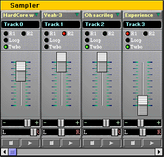
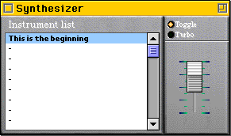
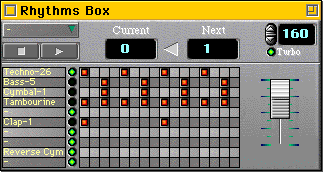
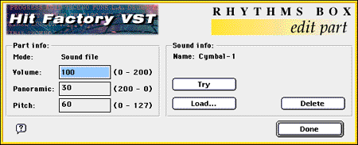
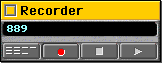
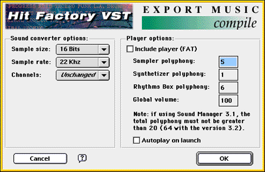
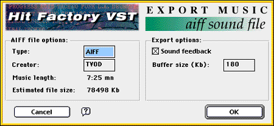
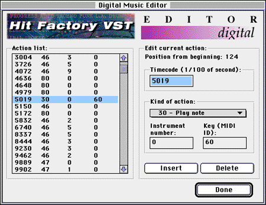
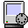

<!doctype html>
<html lang="en">
<head>
<meta charset="utf-8">
<meta name="viewport" content="width=device-width, initial-scale=1">
<title>Hit Factory VST 3.3 Manual</title>
<style>
:root { --k: 1.3; color-scheme: light; }
body { margin: 0; background: #8a8a8a; font-family: "Geneva", "Verdana", sans-serif; }
nav.toc { position: sticky; top: 0; z-index: 1; background: #dddddd; border-bottom: 1px solid #555;
  padding: 6px 16px; font-size: 13px; display: flex; flex-wrap: wrap; gap: 4px 14px; }
nav.toc a { color: #000; text-decoration: none; }
nav.toc a:hover { text-decoration: underline; }
main { max-width: calc(640px * var(--k)); margin: 0 auto; padding: 16px; }
section.chapter { background: #fff; box-shadow: 2px 2px 0 #444; border: 1px solid #000;
  margin: 0 0 24px; padding: 16px 20px; scroll-margin-top: 48px; }
.text { white-space: pre-wrap; tab-size: 6; line-height: 1.25; overflow-wrap: break-word; }
img { image-rendering: pixelated; width: calc(var(--w) * var(--k)); height: auto; max-width: 100%; }
img.inline { vertical-align: middle; }
img.float { display: block; margin: 4px auto 8px; }
a img { cursor: pointer; }
.pager { display: flex; justify-content: space-between; font-size: 13px; margin-top: 12px;
  padding-top: 8px; border-top: 1px dotted #999; }
.pager a { color: #333; }
@media (max-width: 700px) { :root { --k: 1; } section.chapter { padding: 12px; } }
</style>
</head>
<body>
<nav class="toc"><a href="#chapter-1">Hit Factory</a><a href="#chapter-2">Summary</a><a href="#chapter-3">Introduction</a><a href="#chapter-4">The sampler</a><a href="#chapter-5">The synthesizer</a><a href="#chapter-6">The rhythms box</a><a href="#chapter-7">The recorder</a><a href="#chapter-8">The editor</a><a href="#chapter-9">The quantize</a><a href="#chapter-10">The Plug-Ins</a><a href="#chapter-11">The Direct To Disk</a><a href="#chapter-12">The MIDI</a><a href="#chapter-13">The preferences</a><a href="#chapter-14">The menus</a><a href="#chapter-15">Conclusion</a><a href="#chapter-16">Extras</a><a href="#chapter-17">Glossary</a><a href="#chapter-18">Reference</a></nav>
<main>
<section class="chapter" id="chapter-1" aria-label="Hit Factory"><div class="text"><span style='font-family:"Geneva", "Verdana", sans-serif;font-size:calc(10px * var(--k));color:#ff0000'>
            </span><span style='font-family:"Geneva", "Verdana", sans-serif;font-size:calc(10px * var(--k));color:#ff0000;font-weight:bold'>Hit Factory VST</span><span style='font-family:"Geneva", "Verdana", sans-serif;font-size:calc(10px * var(--k));color:#ff0000'>            	                               Questions, comments:
</span><span style='font-family:"Geneva", "Verdana", sans-serif;font-size:calc(10px * var(--k));color:#ff0000'>            </span><span style='font-family:"Geneva", "Verdana", sans-serif;font-size:calc(10px * var(--k));color:#ff0000'>© Pierre-Olivier Latour 1996-97                 </span><span style='font-family:"Geneva", "Verdana", sans-serif;font-size:calc(10px * var(--k));color:#ff0000;text-decoration:underline'>hit-factory@syclone.com</span><span style='font-family:"Geneva", "Verdana", sans-serif;font-size:calc(10px * var(--k));color:#ff0000'>
</span><span style='font-family:"Geneva", "Verdana", sans-serif;font-size:calc(10px * var(--k));color:#ff0000'>            </span><span style='font-family:"Geneva", "Verdana", sans-serif;font-size:calc(10px * var(--k));color:#ff0000;font-weight:bold'>Distributed by Syclone Mutimedia™</span><span style='font-family:"Geneva", "Verdana", sans-serif;font-size:calc(10px * var(--k));color:#ff0000'>      Infos, updates...:
</span><span style='font-family:"Geneva", "Verdana", sans-serif;font-size:calc(10px * var(--k));color:#ff0000'>            </span><span style='font-family:"Geneva", "Verdana", sans-serif;font-size:calc(10px * var(--k));color:#ff0000'>3472 Van Horne, suite 002                              </span><span style='font-family:"Geneva", "Verdana", sans-serif;font-size:calc(10px * var(--k));color:#ff0000;text-decoration:underline'>http://www.syclone.com/hit-factory</span><span style='font-family:"Geneva", "Verdana", sans-serif;font-size:calc(10px * var(--k));color:#ff0000'>
</span><span style='font-family:"Geneva", "Verdana", sans-serif;font-size:calc(10px * var(--k));color:#ff0000'>            </span><span style='font-family:"Geneva", "Verdana", sans-serif;font-size:calc(10px * var(--k));color:#ff0000'>Montreal, PQ
</span><span style='font-family:"Geneva", "Verdana", sans-serif;font-size:calc(10px * var(--k));color:#ff0000'>            </span><span style='font-family:"Geneva", "Verdana", sans-serif;font-size:calc(10px * var(--k));color:#ff0000'>CANADA
</span><span style='font-family:"Geneva", "Verdana", sans-serif;font-size:calc(10px * var(--k))'>
</span><span style='font-family:"Geneva", "Verdana", sans-serif;font-size:calc(12px * var(--k))'>
</span><span style='font-family:"Geneva", "Verdana", sans-serif;font-size:calc(9px * var(--k));color:#555555;font-weight:bold'>Documentation for the standard and PRO versions of Hit Factory VST 3.3.</span><span style='font-family:"Geneva", "Verdana", sans-serif;font-size:calc(10px * var(--k));color:#555555;font-weight:bold'>

<a href="#chapter-2"></a>	      Click here to display
          the summary of the manual.


                                                                         </span><span style='font-family:"Geneva", "Verdana", sans-serif;font-size:calc(9px * var(--k));color:#555555;font-weight:bold'>Last updated in August 1997</span></div><div class="pager"><span></span><a href="#chapter-2">Summary ▶</a></div></section>
<section class="chapter" id="chapter-2" aria-label="Summary"><div class="text"><span style='font-family:"Chicago", "Charcoal", "Geneva", sans-serif;font-size:calc(36px * var(--k));color:#ff6600;font-weight:bold;font-style:italic;text-decoration:underline'>       SUMMARY:</span><span style='font-family:"Geneva", "Verdana", sans-serif;font-size:calc(10px * var(--k))'>


</span><span style='font-family:"Geneva", "Verdana", sans-serif;font-size:calc(10px * var(--k));color:#555555;font-weight:bold'>	To read a chapter, click on the arrow located on the left of its description.</span><span style='font-family:"Geneva", "Verdana", sans-serif;font-size:calc(10px * var(--k))'>


<a href="#chapter-3"></a>          </span><span style='font-family:"Geneva", "Verdana", sans-serif;font-size:calc(10px * var(--k));color:#ff0200;font-weight:bold;text-decoration:underline'>Introduction:</span><span style='font-family:"Geneva", "Verdana", sans-serif;font-size:calc(10px * var(--k))'>
             This chapter contains a short description of Hit Factory VST, the required
             configuration  and the improvements of the latest version.

<a href="#chapter-4"></a>          </span><span style='font-family:"Geneva", "Verdana", sans-serif;font-size:calc(10px * var(--k));color:#ff0200;font-weight:bold;text-decoration:underline'>The sampler:</span><span style='font-family:"Geneva", "Verdana", sans-serif;font-size:calc(10px * var(--k))'>
             This chapter explains you how to use the sampler, the master piece of Hit Factory
             VST.

<a href="#chapter-5"></a>          </span><span style='font-family:"Geneva", "Verdana", sans-serif;font-size:calc(10px * var(--k));color:#ff0200;font-weight:bold;text-decoration:underline'>The synthetizer:</span><span style='font-family:"Geneva", "Verdana", sans-serif;font-size:calc(10px * var(--k))'>
             The use of the synthetizer, which can improve your musics, is explained in this
             chapter.

<a href="#chapter-6"></a>          </span><span style='font-family:"Geneva", "Verdana", sans-serif;font-size:calc(10px * var(--k));color:#ff0200;font-weight:bold;text-decoration:underline'>The rhythms box:</span><span style='font-family:"Geneva", "Verdana", sans-serif;font-size:calc(10px * var(--k))'>
             Consult this chapter to know how to add rhythms to your musics.


<a href="#chapter-7"></a>          </span><span style='font-family:"Geneva", "Verdana", sans-serif;font-size:calc(10px * var(--k));color:#ff0200;font-weight:bold;text-decoration:underline'>The recorder:</span><span style='font-family:"Geneva", "Verdana", sans-serif;font-size:calc(10px * var(--k))'>
             How to record your mix thanks to Hit Factory VST&#x27;s automation system? Or how to
             proceed in order to export your music? The answer is right in this chapter.

<a href="#chapter-8"></a>          </span><span style='font-family:"Geneva", "Verdana", sans-serif;font-size:calc(10px * var(--k));color:#ff0200;font-weight:bold;text-decoration:underline'>The editor:</span><span style='font-family:"Geneva", "Verdana", sans-serif;font-size:calc(10px * var(--k))'>
             Read this chapter if you want to know how to use the editor to modify your musics.


<a href="#chapter-9"></a>          </span><span style='font-family:"Geneva", "Verdana", sans-serif;font-size:calc(10px * var(--k));color:#ff0200;font-weight:bold;text-decoration:underline'>The Quantize:</span><span style='font-family:"Geneva", "Verdana", sans-serif;font-size:calc(10px * var(--k))'>
             Highly powerful help mixing system added in version 3.2.
             Mixing Techno is really easy now!

<a href="#chapter-10"></a>          </span><span style='font-family:"Geneva", "Verdana", sans-serif;font-size:calc(10px * var(--k));color:#ff0200;font-weight:bold;text-decoration:underline'>The Plug-Ins:</span><span style='font-family:"Geneva", "Verdana", sans-serif;font-size:calc(10px * var(--k))'>
             They were added in version 3.2; all the informations about them are located here.


<a href="#chapter-11"></a>          </span><span style='font-family:"Geneva", "Verdana", sans-serif;font-size:calc(10px * var(--k));color:#ff0200;font-weight:bold;text-decoration:underline'>The Direct To Disk:</span><span style='font-family:"Geneva", "Verdana", sans-serif;font-size:calc(10px * var(--k))'>
             Hit Factory VST&#x27;s sampler also have Direct To Disk possibilities; they are explained
            in this chapter.

<a href="#chapter-12"></a>          </span><span style='font-family:"Geneva", "Verdana", sans-serif;font-size:calc(10px * var(--k));color:#ff0200;font-weight:bold;text-decoration:underline'>The MIDI:</span><span style='font-family:"Geneva", "Verdana", sans-serif;font-size:calc(10px * var(--k))'>
             Hit Factory VST is fully compatible with a MIDI environnement. Everything is
             explained here.

<a href="#chapter-13"></a>          </span><span style='font-family:"Geneva", "Verdana", sans-serif;font-size:calc(10px * var(--k));color:#ff0200;font-weight:bold;text-decoration:underline'>The preferences:</span><span style='font-family:"Geneva", "Verdana", sans-serif;font-size:calc(10px * var(--k))'>
             All the options of Hit Factory VST are explained in this chapter.


<a href="#chapter-14"></a>          </span><span style='font-family:"Geneva", "Verdana", sans-serif;font-size:calc(10px * var(--k));color:#ff0200;font-weight:bold;text-decoration:underline'>The menus:</span><span style='font-family:"Geneva", "Verdana", sans-serif;font-size:calc(10px * var(--k))'>
             All the articles of the Hit Factory VST&#x27;s menus.


<a href="#chapter-15"></a>          </span><span style='font-family:"Geneva", "Verdana", sans-serif;font-size:calc(10px * var(--k));color:#ff0200;font-weight:bold;text-decoration:underline'>Conclusion:</span><span style='font-family:"Geneva", "Verdana", sans-serif;font-size:calc(10px * var(--k))'>
             Some tips and infos, the solutions to some problems you may encounter and the
             historic of all the versions of the program.

<a href="#chapter-16"></a>          </span><span style='font-family:"Geneva", "Verdana", sans-serif;font-size:calc(10px * var(--k));color:#ff0200;font-weight:bold;text-decoration:underline'>Extras:</span><span style='font-family:"Geneva", "Verdana", sans-serif;font-size:calc(10px * var(--k))'>
             The description of all the hidden functions of Hit Factory VST, which will turn you
             into an experimanted user.

<a href="#chapter-17"></a>          </span><span style='font-family:"Geneva", "Verdana", sans-serif;font-size:calc(10px * var(--k));color:#ff0200;font-weight:bold;text-decoration:underline'>Glossary:</span><span style='font-family:"Geneva", "Verdana", sans-serif;font-size:calc(10px * var(--k))'>
             You will find here the definitions of the most of the technical terms used in this
             manual.

</span><span style='font-family:"Geneva", "Verdana", sans-serif;font-size:calc(10px * var(--k))'><a href="#chapter-18"></a></span><span style='font-family:"Geneva", "Verdana", sans-serif;font-size:calc(10px * var(--k))'>          </span><span style='font-family:"Geneva", "Verdana", sans-serif;font-size:calc(10px * var(--k));color:#ff0200;font-weight:bold;text-decoration:underline'>Reference:</span><span style='font-family:"Geneva", "Verdana", sans-serif;font-size:calc(10px * var(--k))'>
             All the technical informations about Hit Factory VST.
</span></div><div class="pager"><a href="#chapter-1">◀ Hit Factory</a><a href="#chapter-3">Introduction ▶</a></div></section>
<section class="chapter" id="chapter-3" aria-label="Introduction"><div class="text"><span style='font-family:"Chicago", "Charcoal", "Geneva", sans-serif;font-size:calc(36px * var(--k));color:#ff6600;font-weight:bold;font-style:italic;text-decoration:underline'>    INTRODUCTION:</span><span style='font-family:"Geneva", "Verdana", sans-serif;font-size:calc(10px * var(--k))'>


</span><span style='font-family:"Geneva", "Verdana", sans-serif;font-size:calc(10px * var(--k));color:#555555;font-weight:bold'>	The Hit Factory VST music software is going to turn your Mac into a professional studio. It brings you a stereo sampler (with 8 to 30 tracks) with Direct To Disk possibilities, a stereo synthesizer (up to 10 channels of polyphony) and a stereo rhythms box (up to 10 channels of polyphony). Furthermore you can record everything you do, then reproduce (automation) or modify them.
	Thanks to its help mixing system (quantize), you will be able to create easily your own musics or remix the ones you like.
	Hit Factory VST is the perfect software for all thoses who like to create dance music, techno, trance, rap... and &quot;LIVE&quot; remixes. Thanks to its Direct To Disk capabilities, it can also be used as a multitracks audio numeric recorder for &quot;rock&quot; musicians.</span><span style='font-family:"Geneva", "Verdana", sans-serif;font-size:calc(10px * var(--k))'>

Hit Factory VST is divided into five parts, each one using its own window:
• a </span><span style='font-family:"Geneva", "Verdana", sans-serif;font-size:calc(10px * var(--k));color:#ff0200;font-weight:bold'>sampler</span><span style='font-family:"Geneva", "Verdana", sans-serif;font-size:calc(10px * var(--k))'>, which allows you to loop whatever sound you want or to read a file using Direct To Disk system. You can also modify the sound in real-time: reading speed (pitch), volume and panoramic or even add reverb.
• a </span><span style='font-family:"Geneva", "Verdana", sans-serif;font-size:calc(10px * var(--k));color:#ff0200;font-weight:bold'>synthesizer</span><span style='font-family:"Geneva", "Verdana", sans-serif;font-size:calc(10px * var(--k))'> with which you can use twenty different sounds, which are turned into instruments. The synthesizer is directed from the keyboard.
• a </span><span style='font-family:"Geneva", "Verdana", sans-serif;font-size:calc(10px * var(--k));color:#ff0200;font-weight:bold'>rhythms box</span><span style='font-family:"Geneva", "Verdana", sans-serif;font-size:calc(10px * var(--k))'> in which you can create up to twenty rhythms using ten instruments...
• a </span><span style='font-family:"Geneva", "Verdana", sans-serif;font-size:calc(10px * var(--k));color:#ff0200;font-weight:bold'>recorder</span><span style='font-family:"Geneva", "Verdana", sans-serif;font-size:calc(10px * var(--k))'> which allows you to record your actions (i.e. your mixing) in order to create what is called a &quot;music&quot; and then reproduces it in an animated way with a precision of 1/100 of second: paddles move, buttons light on...
• an </span><span style='font-family:"Geneva", "Verdana", sans-serif;font-size:calc(10px * var(--k));color:#ff0200;font-weight:bold'>editor</span><span style='font-family:"Geneva", "Verdana", sans-serif;font-size:calc(10px * var(--k))'> designed to modify your mixing.


</span><span style='font-family:"Chicago", "Charcoal", "Geneva", sans-serif;font-size:calc(14px * var(--k));color:#330099;font-weight:bold;text-decoration:underline'>Technical notes:</span><span style='font-family:"Geneva", "Verdana", sans-serif;font-size:calc(10px * var(--k))'>

</span><span style='font-family:"Geneva", "Verdana", sans-serif;font-size:calc(10px * var(--k));color:#ff0200;font-weight:bold'>Material:</span><span style='font-family:"Geneva", "Verdana", sans-serif;font-size:calc(10px * var(--k))'>
Hit Factory VST requires a PowerMacintosh or compatible.  The computer must at least be running under System 7.1 and should have the Sound Manager 3.2 installed (included with QuickTime 2.5). You need a 14 inches monitor or more (15 is a lot better!).

</span><span style='font-family:"Geneva", "Verdana", sans-serif;font-size:calc(10px * var(--k));color:#ff0200;font-weight:bold'>Memory:</span><span style='font-family:"Geneva", "Verdana", sans-serif;font-size:calc(10px * var(--k))'>
This program needs 1200K of memory to run. The rest of the memory is used by the sounds. The more your sounds are big, the more you will have to increase the size of the memory allocated to Hit Factory VST.
To change this size, select the application, choose &quot;Read informations&quot; in the &quot;File&quot; menu of the Finder and increase the value in the item at the lower bottom of the window.

</span><span style='font-family:"Geneva", "Verdana", sans-serif;font-size:calc(10px * var(--k));color:#ff0200;font-weight:bold'>Reverb:</span><span style='font-family:"Geneva", "Verdana", sans-serif;font-size:calc(10px * var(--k))'>
If you wish to add reverb on sampler&#x27;s tracks, the extension &quot;SoundSprocket Filter&quot; must be also installed. Be aware that with reverb on, Hit Factory VST miminal memory size grows to 1600K or more, depending on the number of sampler&#x27;s tracks.

</span><span style='font-family:"Geneva", "Verdana", sans-serif;font-size:calc(10px * var(--k));color:#ff0200;font-weight:bold'>MIDI:</span><span style='font-family:"Geneva", "Verdana", sans-serif;font-size:calc(10px * var(--k))'>
If you want to use the MIDI capabilities of this software, the Apple Midi Manager or Opcode OMS must be installed on your hard drive.

</span><span style='font-family:"Geneva", "Verdana", sans-serif;font-size:calc(10px * var(--k));color:#ff0200;font-weight:bold'>Files:</span><span style='font-family:"Geneva", "Verdana", sans-serif;font-size:calc(10px * var(--k))'>
Hit Factory VST can use sound files at least of System 7 type or AIFF type. Theses sounds may be 8 or 16 bits, mono or stereo and even of whatever frequency: 11Khz, 22Khz, 44Khz...


</span><span style='font-family:"Chicago", "Charcoal", "Geneva", sans-serif;font-size:calc(14px * var(--k));color:#330099;font-weight:bold;text-decoration:underline'>What&#x27;s new in version 3.3:</span><span style='font-family:"Geneva", "Verdana", sans-serif;font-size:calc(10px * var(--k))'>

</span><span style='font-family:"Geneva", "Verdana", sans-serif;font-size:calc(10px * var(--k));color:#ff0200;font-weight:bold'>Version 3.2.3:</span><span style='font-family:"Geneva", "Verdana", sans-serif;font-size:calc(10px * var(--k))'>
• Possibility to export musics as different types of files and in different qualities:
   _ as AIFF CD quality sound files (useful to add your music to a multimedia project or to
      burn  it on an audio CD).
   _ as compiled files, which include the score and the sounds.
   _ as stand-alone applications.
• New VST (Virtual Studio) interface.
• MIDI synchronization in &quot;slave&quot; mode (DJ may turn Hit Factory VST into a MIDI sampler).
• OMS compatibility.
• The &quot;Plug-Ins&quot; folder is automatically found: it must be in the same folder as the Hit
   Factory VST application.
• Many bugs corrected
• Lots of improvements.

</span><span style='font-family:"Chicago", "Charcoal", "Geneva", sans-serif;font-size:calc(14px * var(--k));color:#330099;font-weight:bold;text-decoration:underline'>What about versions 3.2 and 3.1:</span><span style='font-family:"Geneva", "Verdana", sans-serif;font-size:calc(10px * var(--k))'>

</span><span style='font-family:"Geneva", "Verdana", sans-serif;font-size:calc(10px * var(--k));color:#ff0200;font-weight:bold'>Version 3.2.1:</span><span style='font-family:"Geneva", "Verdana", sans-serif;font-size:calc(10px * var(--k))'>
• Help mixing system (real time quantize): Hit Factory keeps automatically the sampler
   and the rhythms box in time.
• A Plug-Ins Architecture, which gives a new dimension to Hit Factory: possibility to
   load new types of sound files, to use differents editors, to change the look of the program...
• A real piano: now, when you release a piano key, the related sound stops.
   Dialog for piano preferences was redesigned.
• Elapsed time is when using Direct To Disk files.
• A bug of the recorder was corrected (4% time gap).
• A bug concerning to localization of the Hit Factory folder was fixed.
</span><span style='font-family:"Geneva", "Verdana", sans-serif;font-size:calc(10px * var(--k));color:#ff0200;font-weight:bold'>Version 3.1.5:</span><span style='font-family:"Geneva", "Verdana", sans-serif;font-size:calc(10px * var(--k))'>
• 3D buttons.
• Improved reverb.
• The rhythms box can now send Midi messages, in order to use directly the drums kits of
   your synthetizer.
• Improved piano: the &quot;Enter&quot; key starts / stops the rhythms box and the &quot;Space&quot; key
   pauses / resumes the sampler.
• Drag &amp; Drop aware: you can now drop the sound, Bank, AIFF, Pattern files from the Finder
   on Hit Factory&#x27;s windows.
• Correction of bug concerning the volume setting of the rhythms box.
</span><span style='font-family:"Geneva", "Verdana", sans-serif;font-size:calc(10px * var(--k));color:#ff0200;font-weight:bold'>Version 3.1.4:</span><span style='font-family:"Geneva", "Verdana", sans-serif;font-size:calc(10px * var(--k))'>
• Apple Events supported (&#x27;odoc&#x27; and &#x27;quit&#x27;).
• The &quot;About Hit Factory...&quot; window now shows the amount of free memory.
• New open dialog which displays informations about the selected sound.
• New MIDI driver directly interfaced with the MIDI Manager (it doesn&#x27;t use QuickTime
   anymore), which automatically connects.
• The driver of the recorder was improved (reading mode).
</span><span style='font-family:"Geneva", "Verdana", sans-serif;font-size:calc(10px * var(--k));color:#ff0200;font-weight:bold'>Version 3.1.3:</span><span style='font-family:"Geneva", "Verdana", sans-serif;font-size:calc(10px * var(--k))'>
• Correction of a bug appearing only on some kind of Performas.
• MIDI compatibility for the rhythms box.
</span><span style='font-family:"Geneva", "Verdana", sans-serif;font-size:calc(10px * var(--k));color:#ff0200;font-weight:bold'>Version 3.1.2:</span><span style='font-family:"Geneva", "Verdana", sans-serif;font-size:calc(10px * var(--k))'>
• Addition of volume, panoramic and pitch settings on each part of the rhythms box.
</span><span style='font-family:"Geneva", "Verdana", sans-serif;font-size:calc(10px * var(--k));color:#ff0200;font-weight:bold'>Version 3.1.1:</span><span style='font-family:"Geneva", "Verdana", sans-serif;font-size:calc(10px * var(--k))'>
• A new part: the rhythms box.
• The recorder now works with a precision of 1/100 of second.
• You can rename or change the location of the sound files used with a music, Hit Factory
   will find them again (as long as thez stay on the same drive).
• Direct To Disk possibilities with the sampler.
• Real time pitch correction on sampler&#x27;s tracks in a range of 20%
• Real time reverb on samler&#x27;s tracks.
• MIDI compatibility.
• A high-speed sound files loading system: Fast Load
• Balloon Help is now supported.
• Piano has been a lot improved.
• The size of the sampler&#x27;s window (i.e. the number of visible tracks) is automaticaly set up
   according to the screen resolution when Hit Factory starts up.
• Paddles operation has been perfected. 
• And lots of other improvements...</span></div><div class="pager"><a href="#chapter-2">◀ Summary</a><a href="#chapter-4">The sampler ▶</a></div></section>
<section class="chapter" id="chapter-4" aria-label="The sampler"><div class="text"><span style='font-family:"Chicago", "Charcoal", "Geneva", sans-serif;font-size:calc(36px * var(--k));color:#ff6600;font-weight:bold;font-style:italic;text-decoration:underline'>				 	THE SAMPLER:</span><span style='font-family:"Geneva", "Verdana", sans-serif;font-size:calc(10px * var(--k))'>


</span><span style='font-family:"Geneva", "Verdana", sans-serif;font-size:calc(10px * var(--k));color:#555555;font-weight:bold'>	The sampler is the main part of Factory; it is in the &quot;Sampler&quot; window. It can contain 8 to 30 tracks fully independant (see &quot;Setting Hit Factory VST&quot; chapter). Each of theses tracks is represented by a rectangular drawing in the window. </span><span style='font-family:"Geneva", "Verdana", sans-serif;font-size:calc(10px * var(--k))'>


 To access to the functions of a track, click on the top button (the one with a green triangle)of this track. A submenu appears:


</span><span style='font-family:"Chicago", "Charcoal", "Geneva", sans-serif;font-size:calc(14px * var(--k));color:#330099;font-weight:bold;text-decoration:underline'>Loading and deleting sounds:</span><span style='font-family:"Geneva", "Verdana", sans-serif;font-size:calc(10px * var(--k))'>

• In order to load a sound on a track and use it as a sample, select &quot;Load sample or bank...&quot;. In the open dialog, select the sound you wish then click on&quot;Load&quot;. This files must be in System 7 or AIFF sound format. Note that the &quot;Load Direct To Disk...&quot; menu item is explained at the end of the chapter &quot;The Direct To Disk&quot;.
• To load a Bank file, do the same thing.

</span><span style='font-family:"Geneva", "Verdana", sans-serif;font-size:calc(10px * var(--k));font-style:italic;text-decoration:underline'>Note:</span><span style='font-family:"Geneva", "Verdana", sans-serif;font-size:calc(10px * var(--k));font-style:italic'>  You can avoid the open dialog and go really fast if you use the &quot;Fast load&quot; item. It lists all the subfolders and their sound files contained in the folder defined as the master sounds folder (see &quot;The preferences&quot; chapter). If you choose that way to load a sound and if a sound is already playing on a track, it will be closed whereas the one you have selected is loaded and automaticaly starts playing.

</span><span style='font-family:"Geneva", "Verdana", sans-serif;font-size:calc(10px * var(--k))'>• To delete the sound loaded on a track, choose &quot;Close file&quot; in the submenu. The memory it used is free again.


</span><span style='font-family:"Chicago", "Charcoal", "Geneva", sans-serif;font-size:calc(14px * var(--k));color:#330099;font-weight:bold;text-decoration:underline'>Using sounds:</span><span style='font-family:"Geneva", "Verdana", sans-serif;font-size:calc(10px * var(--k))'>

• To start playing the sound or the Direct To Disk file associated to a track, click on the &quot;Play&quot; button (the one with an arrow) at the bottom of the track.
• To stop the sound, click on the &quot;Stop&quot; button (the one with a square).
• To set the volume of the track, move, keeping the mouse button down, the purple vertical paddle or click at the place you wish it to go.
• To set the pitch of the track, move the paddle on the blue background. You can change the pitch of the sound in a range of 20%. The central position of the paddle is the normal pitch.
• To set the panoramic of the track if the sound is mono or its balance if it is stereo, move the paddle on the white and red background.


</span><span style='font-family:"Chicago", "Charcoal", "Geneva", sans-serif;font-size:calc(14px * var(--k));color:#330099;font-weight:bold;text-decoration:underline'>Modifying the options of a track:</span><span style='font-family:"Geneva", "Verdana", sans-serif;font-size:calc(10px * var(--k))'>

• To choose the initialisation mode (stereo, mono, left only or right only), select the appropriated option in the submenu.
• To make the sound looping between the left and rigth speakers, click on the &quot;Loop&quot; button. Click on it again to stop it. You can set the speed of the loop in the &quot;Utilities&quot; menu: &quot;Set loop speed&quot;.

</span><span style='font-family:"Geneva", "Verdana", sans-serif;font-size:calc(10px * var(--k));font-style:italic;text-decoration:underline'>Note:</span><span style='font-family:"Geneva", "Verdana", sans-serif;font-size:calc(10px * var(--k));font-style:italic'>  The panoramic setting and the &quot;Loop&quot; option are available only if the track is in &quot;Stereo&quot; or &quot;Mono&quot; mode.
</span><span style='font-family:"Geneva", "Verdana", sans-serif;font-size:calc(10px * var(--k))'>
• To set the &quot;Turbo&quot; mode of the track or return to normal mode, click on the &quot;Turbo&quot; button.
• To add reverb to the track or to suppress it, click on the buttons &quot;R1&quot; or &quot;R2&quot;.
• To select the active sound in a Bank file, use the arrows (they are visible only if a Bank file is loaded on the track).

</span><span style='font-family:"Geneva", "Verdana", sans-serif;font-size:calc(10px * var(--k));font-style:italic;text-decoration:underline'>Note:</span><span style='font-family:"Geneva", "Verdana", sans-serif;font-size:calc(10px * var(--k));font-style:italic'>  In order that reverb works, the &quot;Enabled &quot; item in the reverb preferences dialog must be checked. For more informations, please report to chapter&quot;The preferences&quot;.</span><span style='font-family:"Geneva", "Verdana", sans-serif;font-size:calc(10px * var(--k))'>


</span><span style='font-family:"Chicago", "Charcoal", "Geneva", sans-serif;font-size:calc(14px * var(--k));color:#330099;font-weight:bold;text-decoration:underline'>Moving into the sampler&#x27;s tracks:</span><span style='font-family:"Geneva", "Verdana", sans-serif;font-size:calc(10px * var(--k))'>

	The sampler&#x27;s window only shows some of the sampler&#x27;s tracks (8 out of 16 for example). To shift all the tracks to the left, press the right key of your keyboard. To shift all the tracks to the right, press the left key of your keyboard. You may also use the scroll bar at the bottom of the window.

</span><span style='font-family:"Geneva", "Verdana", sans-serif;font-size:calc(10px * var(--k));font-style:italic;text-decoration:underline'>Note:</span><span style='font-family:"Geneva", "Verdana", sans-serif;font-size:calc(10px * var(--k));font-style:italic'> The size of the sampler&#x27;s window (i.e. the number of visible tracks) is automatically set up according to the screen resolution when Hit Factory VST starts up.</span></div><div class="pager"><a href="#chapter-3">◀ Introduction</a><a href="#chapter-5">The synthesizer ▶</a></div></section>
<section class="chapter" id="chapter-5" aria-label="The synthesizer"><div class="text"><span style='font-family:"Chicago", "Charcoal", "Geneva", sans-serif;font-size:calc(36px * var(--k));color:#ff6600;font-weight:bold;font-style:italic;text-decoration:underline'>		THE SYNTHESIZER:</span><span style='font-family:"Geneva", "Verdana", sans-serif;font-size:calc(10px * var(--k))'>


</span><span style='font-family:"Geneva", "Verdana", sans-serif;font-size:calc(10px * var(--k));color:#555555;font-weight:bold'>	The synthesizer, located in the &quot;Synthesizer&quot; window, allows you to use every kind of sound as an instrument, simulating the notes by pitch variations.</span><span style='font-family:"Geneva", "Verdana", sans-serif;font-size:calc(10px * var(--k))'>


</span><span style='font-family:"Chicago", "Charcoal", "Geneva", sans-serif;font-size:calc(14px * var(--k));color:#330099;font-weight:bold;text-decoration:underline'>Loading and deleting sounds:</span><span style='font-family:"Geneva", "Verdana", sans-serif;font-size:calc(10px * var(--k));font-weight:bold'>

</span><span style='font-family:"Geneva", "Verdana", sans-serif;font-size:calc(10px * var(--k))'>• To load a sound and to use it as an instrument, double-click on one of the items of the list. In the open dialog, select a System 7 or AIFF format sound file, then click on &quot;Load&quot;.
• To choose the active instrument (the one you hear when pushing the keys of the keyboard - &quot;Dance-6&quot; in the above picture), click on the name of the instrument or use the vertical arrow keys of your keyboard.
• To delete a sound from the synthesizer, select it as the active instrument, then choose &quot;Close active instrument&quot; in the &quot;Utilities&quot; menu.


</span><span style='font-family:"Chicago", "Charcoal", "Geneva", sans-serif;font-size:calc(14px * var(--k));color:#330099;font-weight:bold;text-decoration:underline'>Modifying the options of the synthesizer:</span><span style='font-family:"Geneva", "Verdana", sans-serif;font-size:calc(10px * var(--k))'>

• To set the volume of the synthesizer, move the paddle at the top right of the window.
• In order that the synthesizer alternatively plays sounds on the left and right speakers, click on the &quot;Toggle&quot; button. To cancel this effect, click again (sounds are now played at the center).
• To set the &quot;Turbo&quot; mode of the track or return to normal mode, click on the &quot;Turbo&quot; button.

</span><span style='font-family:"Geneva", "Verdana", sans-serif;font-size:calc(10px * var(--k));font-style:italic;text-decoration:underline'>Note:</span><span style='font-family:"Geneva", "Verdana", sans-serif;font-size:calc(10px * var(--k));font-style:italic'> You can reduce the size of the window by clicking on the Zoom box in the title bar of the window.
If you wish to use stereo sounds with the synthesizer, the &quot;Toggle&quot; button must be unchecked.</span></div><div class="pager"><a href="#chapter-4">◀ The sampler</a><a href="#chapter-6">The rhythms box ▶</a></div></section>
<section class="chapter" id="chapter-6" aria-label="The rhythms box"><div class="text"><span style='font-family:"Chicago", "Charcoal", "Geneva", sans-serif;font-size:calc(36px * var(--k));color:#ff6600;font-weight:bold;font-style:italic;text-decoration:underline'>  THE RHYTHMS BOX:</span><span style='font-family:"Geneva", "Verdana", sans-serif;font-size:calc(10px * var(--k))'>


</span><span style='font-family:"Geneva", "Verdana", sans-serif;font-size:calc(10px * var(--k));color:#555555;font-weight:bold'>	The rhythms box, located in the &quot;Rhythms Box&quot; window, allows you to create completely rhythms using patterns descriptions. You can either use as instruments sound files or thoses from the drum kits of your synthetizer (channel 10). It contains 10 parts and you can program 20 different patterns.</span><span style='font-family:"Geneva", "Verdana", sans-serif;font-size:calc(10px * var(--k))'>


</span><span style='font-family:"Chicago", "Charcoal", "Geneva", sans-serif;font-size:calc(14px * var(--k));color:#330099;font-weight:bold;text-decoration:underline'>Description of the rhythms box:
</span><span style='font-family:"Chicago", "Charcoal", "Geneva", sans-serif;font-size:calc(14px * var(--k));color:#330099'>
</span><span style='font-family:"Geneva", "Verdana", sans-serif;font-size:calc(10px * var(--k))'>	Rhythms are described as patterns of 16 X 10: 16 times et 10 parts related to 10 instruments.
When you click on the Play button, the rhythms box plays the pattern whose number is indicated under &quot;Current&quot; (0 in the above picture). As soon as this pattern is finished, it plays the pattern whoose number is indicated under &quot;Next&quot; (1 in this example). The value under &quot;Current&quot; is replaced by the one under &quot;Next&quot; (1 remplaces 0), and so on...


</span><span style='font-family:"Chicago", "Charcoal", "Geneva", sans-serif;font-size:calc(14px * var(--k));color:#330099;font-weight:bold;text-decoration:underline'>Loading and deleting instruments:</span><span style='font-family:"Geneva", "Verdana", sans-serif;font-size:calc(10px * var(--k));font-weight:bold'>

</span><span style='font-family:"Geneva", "Verdana", sans-serif;font-size:calc(10px * var(--k));font-style:italic;text-decoration:underline'>Note:</span><span style='font-family:"Geneva", "Verdana", sans-serif;font-size:calc(10px * var(--k));font-style:italic'> The rhythms box and the recorder must be stopped.
In order to access to MIDI features, you must check the &quot;Enabled&quot; item in the MIDI preferences dialog.

</span><span style='font-family:"Geneva", "Verdana", sans-serif;font-size:calc(10px * var(--k))'>• To set the options of the instrument load on a part, click on its name. A dialog appears:


</span><span style='font-family:"Geneva", "Verdana", sans-serif;font-size:calc(10px * var(--k));color:#ff0200;text-decoration:underline'>&quot;Mode&quot;:</span><span style='font-family:"Geneva", "Verdana", sans-serif;font-size:calc(10px * var(--k))'> current mode of the part:
  _&quot;None&quot;: it&#x27;s muted.
  _&quot;Sound file&quot;: it uses a sound file as an instrument.
  _&quot;MIDI&quot;: it uses a MIDI note from channel 10.
</span><span style='font-family:"Geneva", "Verdana", sans-serif;font-size:calc(10px * var(--k));color:#ff0200;text-decoration:underline'>&quot;Volume&quot;:</span><span style='font-family:"Geneva", "Verdana", sans-serif;font-size:calc(10px * var(--k))'> volume of the instrument between 0 and 200, 100 is the normal volume. Be aware that entering a value greater than 100 may result in lower quality sound (only in &quot;Sound file&quot; mode).
</span><span style='font-family:"Geneva", "Verdana", sans-serif;font-size:calc(10px * var(--k));color:#ff0200;text-decoration:underline'>&quot;Panoramic&quot;:</span><span style='font-family:"Geneva", "Verdana", sans-serif;font-size:calc(10px * var(--k))'> position of the sound between the left and right speakers indicated with a value between 0 and 200: 200 means maximum left, 100 middle and 0 maximum right (this value has no effect in &quot;MIDI&quot; mode).
</span><span style='font-family:"Geneva", "Verdana", sans-serif;font-size:calc(10px * var(--k));color:#ff0200;text-decoration:underline'>&quot;Pitch&quot;:</span><span style='font-family:"Geneva", "Verdana", sans-serif;font-size:calc(10px * var(--k))'> in the &quot;Sound file&quot; mode, it is the pitch of the sound between 0 and 127 (MIDI values): 60 is the normal pitch. In &quot;MIDI&quot; mode, it indicates the note related to the instrument to use in the drum kit.
</span><span style='font-family:"Geneva", "Verdana", sans-serif;font-size:calc(10px * var(--k));color:#ff0200;text-decoration:underline'>&quot;Name&quot;:</span><span style='font-family:"Geneva", "Verdana", sans-serif;font-size:calc(10px * var(--k))'> name of the instrument loaded on the part, if it is in &quot;Sound file&quot; mode.
</span><span style='font-family:"Geneva", "Verdana", sans-serif;font-size:calc(10px * var(--k));color:#ff0200;text-decoration:underline'>bouton &quot;Try&quot;:</span><span style='font-family:"Geneva", "Verdana", sans-serif;font-size:calc(10px * var(--k))'> plays the sound with the current settings.
</span><span style='font-family:"Geneva", "Verdana", sans-serif;font-size:calc(10px * var(--k));color:#ff0200;text-decoration:underline'>bouton &quot;Load...&quot;:</span><span style='font-family:"Geneva", "Verdana", sans-serif;font-size:calc(10px * var(--k))'> shows the open dialog in order to load another sound file. Select a sound file, then click on &quot;Load&quot;. This files must be in System 7 or AIFF format. The mode of the part is set to &quot;Sound file&quot;.
</span><span style='font-family:"Geneva", "Verdana", sans-serif;font-size:calc(10px * var(--k));color:#ff0200;text-decoration:underline'>bouton &quot;Delete&quot;:</span><span style='font-family:"Geneva", "Verdana", sans-serif;font-size:calc(10px * var(--k))'> closes the sound file and free up the memory it used. If the option &quot;MIDI aware&quot; is checked in the preferences, the mode of the part is set to &quot;MIDI&quot;.
</span><span style='font-family:"Geneva", "Verdana", sans-serif;font-size:calc(10px * var(--k));color:#ff0200;text-decoration:underline'>bouton &quot;Done&quot;:</span><span style='font-family:"Geneva", "Verdana", sans-serif;font-size:calc(10px * var(--k))'> confirms the settings and closes the dialog.

</span><span style='font-family:"Geneva", "Verdana", sans-serif;font-size:calc(10px * var(--k));font-style:italic;text-decoration:underline'>Note:</span><span style='font-family:"Geneva", "Verdana", sans-serif;font-size:calc(10px * var(--k));font-style:italic'> The part can be in &quot;None&quot; mode only if no sound file is loaded and if the &quot;Enabled&quot; item in the MIDI preferences dialog is checked.
In &quot;MIDI&quot; mode, the name of the part in the rhythms box becomes &quot;MIDI&quot; followed by the number of the instrument.</span><span style='font-family:"Geneva", "Verdana", sans-serif;font-size:calc(10px * var(--k))'>


</span><span style='font-family:"Chicago", "Charcoal", "Geneva", sans-serif;font-size:calc(14px * var(--k));color:#330099;font-weight:bold;text-decoration:underline'>Using the rhythms box:
</span><span style='font-family:"Chicago", "Charcoal", "Geneva", sans-serif;font-size:calc(14px * var(--k));color:#330099'>
</span><span style='font-family:"Geneva", "Verdana", sans-serif;font-size:calc(10px * var(--k))'>• To select the current pattern, i.e. the one that will be played first (the rhythms box must be stopped), click on the number under &quot;Current&quot; and select a new one in the submenu.
• To start the rhythms box, click on the &quot;Play&quot; button (the one with an arrow).
• To stop it, click on the &quot;Stop&quot; button (the one with a square). When you will start it again, it will continue where it previously stopped, unless you change the number of the current pattern; in this case, it will start at the beginning.
• To set the volume of the rhythms box, move the paddle at the top right of the window.
• To set the &quot;Turbo&quot; mode or return to normal mode, click on the &quot;Turbo&quot; button.
• To set its speed (indicated in BPM), use the arrow buttons at the top right hand corner.
• To set the number of the next pattern to play (as soon as the current one is finished), click on the number under &quot;Next&quot; and select a new one in the submenu.
• To mute a part, click on the green light on the right of its name. Click again to unmute it.

</span><span style='font-family:"Chicago", "Charcoal", "Geneva", sans-serif;font-size:calc(14px * var(--k));color:#330099;font-weight:bold;text-decoration:underline'>Creating patterns:</span><span style='font-family:"Geneva", "Verdana", sans-serif;font-size:calc(10px * var(--k));font-weight:bold'>

</span><span style='font-family:"Geneva", "Verdana", sans-serif;font-size:calc(10px * var(--k));font-style:italic;text-decoration:underline'>Note:</span><span style='font-family:"Geneva", "Verdana", sans-serif;font-size:calc(10px * var(--k));font-style:italic'> The recorder must be stopped.

</span><span style='font-family:"Geneva", "Verdana", sans-serif;font-size:calc(10px * var(--k))'>	To show the pattern you wish to work on, click on the number under &quot;Current&quot; and select a new one in the submenu. There are two ways in order to create a pattern:

</span><span style='font-family:"Geneva", "Verdana", sans-serif;font-size:calc(10px * var(--k));color:#ff0200;text-decoration:underline'>&quot;Step by step&quot;:</span><span style='font-family:"Geneva", "Verdana", sans-serif;font-size:calc(10px * var(--k))'> The rhythms box must be stopped. With this method, you fill in the grid in order to represent graphically the rhythms: in order that an instrument be played at a defined time, click on the cell located at the intersection of the line of the instrument and of the column of this time; it becomes red. Click again at the same place to undo.

</span><span style='font-family:"Geneva", "Verdana", sans-serif;font-size:calc(10px * var(--k));color:#ff0200;text-decoration:underline'>&quot;Real time&quot;:</span><span style='font-family:"Geneva", "Verdana", sans-serif;font-size:calc(10px * var(--k))'> If it is not already the case, set the number of the next pattern to the current one, by clicking on the number under &quot;Next&quot;. Then start the rhythms box. With this method, you are going to write the rhythm in real time: when you want an instrument to be played, click on its name. The pattern is automaticaly updated.


</span><span style='font-family:"Chicago", "Charcoal", "Geneva", sans-serif;font-size:calc(14px * var(--k));color:#330099;font-weight:bold;text-decoration:underline'>Special functions:
</span><span style='font-family:"Chicago", "Charcoal", "Geneva", sans-serif;font-size:calc(14px * var(--k));color:#330099'>
</span><span style='font-family:"Geneva", "Verdana", sans-serif;font-size:calc(10px * var(--k))'>To show the menu dedicated to the special functions, click on the button with a	green triangle:

	</span><span style='font-family:"Geneva", "Verdana", sans-serif;font-size:calc(10px * var(--k));color:#ff0200;text-decoration:underline'>&quot;Open pattern set...&quot;:</span><span style='font-family:"Geneva", "Verdana", sans-serif;font-size:calc(10px * var(--k))'> opens a file describing a configuration  for the rhythms box. In the open dialog, select a pattern file, then click on &quot;Load&quot;.
	</span><span style='font-family:"Geneva", "Verdana", sans-serif;font-size:calc(10px * var(--k));color:#ff0200;text-decoration:underline'>&quot;Save pattern set...&quot;:</span><span style='font-family:"Geneva", "Verdana", sans-serif;font-size:calc(10px * var(--k))'> saves the configuration of the rhythms box (sounds files, patterns and settings). Indicate a location on the hard drive then click on &quot;Save&quot;.
	</span><span style='font-family:"Geneva", "Verdana", sans-serif;font-size:calc(10px * var(--k));color:#ff0200;text-decoration:underline'>&quot;Copy pattern to next one&quot;:</span><span style='font-family:"Geneva", "Verdana", sans-serif;font-size:calc(10px * var(--k))'> copies the current pattern into the next one, then shows it.
	</span><span style='font-family:"Geneva", "Verdana", sans-serif;font-size:calc(10px * var(--k));color:#ff0200;text-decoration:underline'>&quot;Clear pattern&quot;:</span><span style='font-family:"Geneva", "Verdana", sans-serif;font-size:calc(10px * var(--k))'> clears the current pattern.

</span><span style='font-family:"Geneva", "Verdana", sans-serif;font-size:calc(10px * var(--k));font-style:italic;text-decoration:underline'>Note:</span><span style='font-family:"Geneva", "Verdana", sans-serif;font-size:calc(10px * var(--k));font-style:italic'> You can reduce the size of the rhythms box window by clicking on the zoom box in the title bar.</span></div><div class="pager"><a href="#chapter-5">◀ The synthesizer</a><a href="#chapter-7">The recorder ▶</a></div></section>
<section class="chapter" id="chapter-7" aria-label="The recorder"><div class="text"><span style='font-family:"Chicago", "Charcoal", "Geneva", sans-serif;font-size:calc(36px * var(--k));color:#ff6600;font-weight:bold;font-style:italic;text-decoration:underline'>   THE RECORDER:</span><span style='font-family:"Geneva", "Verdana", sans-serif;font-size:calc(10px * var(--k))'>


</span><span style='font-family:"Geneva", "Verdana", sans-serif;font-size:calc(10px * var(--k));color:#555555;font-weight:bold'>	The recorder of Hit Factory VST, located in the &quot;Recorder&quot; window, allows you to record your mixing with a precision of 1/100 of second. It then reproduce it in an animated way: buttons light on, paddles move...</span><span style='font-family:"Geneva", "Verdana", sans-serif;font-size:calc(10px * var(--k))'>


</span><span style='font-family:"Chicago", "Charcoal", "Geneva", sans-serif;font-size:calc(14px * var(--k));color:#330099;font-weight:bold;text-decoration:underline'>Recording and reproducing:</span><span style='font-family:"Geneva", "Verdana", sans-serif;font-size:calc(10px * var(--k));font-weight:bold'>

</span><span style='font-family:"Geneva", "Verdana", sans-serif;font-size:calc(10px * var(--k))'>• To start recorder, click on the &quot;Record&quot; button (the one with a circle). The recorder makes a &quot;copy of the settings&quot; of the sampler, synthesizer and rhythms box (positions of the paddles of pitch, volumes...). Then the time-code (indicated in hundreds of seconds) shown at the top of the window, starts and </span><span style='font-family:"Geneva", "Verdana", sans-serif;font-size:calc(10px * var(--k));font-weight:bold'>all</span><span style='font-family:"Geneva", "Verdana", sans-serif;font-size:calc(10px * var(--k))'> the actions you do are recorded.
• To stop recording, click on the &quot;Stop&quot; button (the one with a square).
• To start playing the recorded music (i.e. the mixing), click on the &quot;Play&quot; button (the one with an arrow).

</span><span style='font-family:"Geneva", "Verdana", sans-serif;font-size:calc(10px * var(--k));font-style:italic;text-decoration:underline'>Note:</span><span style='font-family:"Geneva", "Verdana", sans-serif;font-size:calc(10px * var(--k));font-style:italic'> The recorder set the volumes, pitchs... as they were when the recording was done, thanks to the &quot;copy of settings&quot; it had done before.</span><span style='font-family:"Geneva", "Verdana", sans-serif;font-size:calc(10px * var(--k))'>

• To edit the music, click on the &quot;Edit&quot; button (the one at the bottom left hand corner). The use of the editor is explained in the next chapter.


</span><span style='font-family:"Chicago", "Charcoal", "Geneva", sans-serif;font-size:calc(14px * var(--k));color:#330099;font-weight:bold;text-decoration:underline'>Loading and saving a music:</span><span style='font-family:"Geneva", "Verdana", sans-serif;font-size:calc(10px * var(--k))'>

• To save your music, choose &quot;Save music as...&quot; in the &quot;File&quot; menu; indicate a name, then click on &quot;Save&quot;. Of course, the &quot;copy of the settings&quot; is also saved.

</span><span style='font-family:"Geneva", "Verdana", sans-serif;font-size:calc(10px * var(--k));font-style:italic;text-decoration:underline'>Note:</span><span style='font-family:"Geneva", "Verdana", sans-serif;font-size:calc(10px * var(--k));font-style:italic'> You must not give to your music the name of one of the sound files it uses; otherwise, you will get a &quot;Missing Import Plug-In&quot; error, when you will try to open it.</span><span style='font-family:"Geneva", "Verdana", sans-serif;font-size:calc(10px * var(--k))'>

• To load a music, select &quot;Open music...&quot; in the same menu; select a music file, then click on &quot;Load&quot;.
• To create an empty music, choose &quot;New music&quot;. Hit Factory VST closes all the sound files and clears the recorder.

	While it is playing a music, you can still use Hit Factory VST: you can change panoramics, volumes, etc...

</span><span style='font-family:"Geneva", "Verdana", sans-serif;font-size:calc(10px * var(--k));font-style:italic;text-decoration:underline'>Note:</span><span style='font-family:"Geneva", "Verdana", sans-serif;font-size:calc(10px * var(--k));font-style:italic'> When the recorder is playing or recording, it is not allowed to load or delete sounds with the sampler, the synthesizer or the rhythms box.

</span><span style='font-family:"Geneva", "Verdana", sans-serif;font-size:calc(10px * var(--k))'>
</span><span style='font-family:"Chicago", "Charcoal", "Geneva", sans-serif;font-size:calc(14px * var(--k));color:#330099;font-weight:bold;text-decoration:underline'>How does Hit Factory VST find the sound files used in a music:</span><span style='font-family:"Geneva", "Verdana", sans-serif;font-size:calc(10px * var(--k))'>

	Hit Factory VST saves in the music file only the names and locations of the sound files used in the music, not the sounds themselves.
	When you load a music, the software looks for the related sound files. It first looks in the parent folder of the music file, then in the whole hard drive. If it can&#x27;t find a sound file, it will ask you for its location. In such a case, Hit Factory VST doesn&#x27;t immediately save the new location. That&#x27;s why you have to save the music again (using &quot;Save as...&quot;).
	Hit Factory VST will find the sound files even if you change their names or move them, but they have to stay on the same volume (don&#x27;t move them from a hard drive to a disk for example).


</span><span style='font-family:"Chicago", "Charcoal", "Geneva", sans-serif;font-size:calc(14px * var(--k));color:#330099;font-weight:bold;text-decoration:underline'>Modifying the &quot;copy of the settings&quot; of a music:</span><span style='font-family:"Geneva", "Verdana", sans-serif;font-size:calc(10px * var(--k));text-decoration:underline'>

</span><span style='font-family:"Geneva", "Verdana", sans-serif;font-size:calc(10px * var(--k))'>	Select &quot;Restore settings&quot; in the &quot;Utilities&quot; menu, in order to set the sampler, the synthesizer and the rhythms box as they were when the recording was done.
	Make the changes you wish: modifiate panoramics, start samples, etc...
	Finally, select &quot;Freeze settings&quot; in the &quot;Utilities&quot; menu. This command makes a new &quot;copy of the settings&quot; replacing the first one. Don&#x27;t forget to save the music!


</span><span style='font-family:"Chicago", "Charcoal", "Geneva", sans-serif;font-size:calc(14px * var(--k));color:#330099;font-weight:bold;text-decoration:underline'>Exporting a music:</span><span style='font-family:"Geneva", "Verdana", sans-serif;font-size:calc(10px * var(--k));text-decoration:underline'>

</span><span style='font-family:"Geneva", "Verdana", sans-serif;font-size:calc(10px * var(--k))'>	When your music is ready, you can &quot;compile&quot; it, i.e. put in one file the music and the related sound files, in order to distribute it or to use it in a program thanks to the Developpement Kit (API availables on Hit Factory VST web site or CD), if you&#x27;re a programmer. You can also turn it into an AIFF CD quality sound file in order to use it in a multimedia project or to write it on an audio CD.

</span><span style='font-family:"Geneva", "Verdana", sans-serif;font-size:calc(10px * var(--k));color:#ff0200;font-weight:bold;text-decoration:underline'>• Export as a compiled file:
</span><span style='font-family:"Geneva", "Verdana", sans-serif;font-size:calc(10px * var(--k))'>
 First load a music, then choose &quot;Compiled music...&quot; in the submenu &quot;Export&quot; of the &quot;File&quot; menu (please note that you can not export musics that use Direct To Disk or Bank files.). A setting dialog box appears:


</span><span style='font-family:"Geneva", "Verdana", sans-serif;font-size:calc(10px * var(--k));color:#ff0200;text-decoration:underline'>Part &quot;Sound converter options&quot;:</span><span style='font-family:"Geneva", "Verdana", sans-serif;font-size:calc(10px * var(--k))'> Hit Factory VST is able to resample all the sounds before copying them in the compiled file, in order to decrease their size. Choose a format using Sample size / Sample rate / Channels submenus. In order to leave the sounds untouched, set all the submenus to &quot;Unchanged&quot;.

</span><span style='font-family:"Geneva", "Verdana", sans-serif;font-size:calc(10px * var(--k));font-style:italic;text-decoration:underline'>Note:</span><span style='font-family:"Geneva", "Verdana", sans-serif;font-size:calc(10px * var(--k));font-style:italic'> This function is available only if Sound Manager 3.2.1 is present.
You shouldn&#x27;t choose a format under 16 Bits 22 Khz, otherwise the sound quality and the precision of the mixing will be lower.
</span><span style='font-family:"Geneva", "Verdana", sans-serif;font-size:calc(10px * var(--k))'>
</span><span style='font-family:"Geneva", "Verdana", sans-serif;font-size:calc(10px * var(--k));color:#ff0200;text-decoration:underline'>Part &quot;Player options&quot;:</span><span style='font-family:"Geneva", "Verdana", sans-serif;font-size:calc(10px * var(--k))'> check the item &quot;Include player (FAT)&quot; to create a stand-alone FAT application (usable on Macs with at least System 7.1): in order to play the music, the user just needs to double-clic on it.
The values indicating the sampler&#x27;s polyphony (between 0 and 30), the synthetizer&#x27;s polyphony (between 0 and 10) and the rhythms box&#x27;s polyphony (between 0 and 10) are set automatically, but you can modify them if you wish.
You can also change the volume at which the music will be played (between 0 and 256: best  value = 100).
Check the item &quot;Autoplay on launch&quot; in order that the music starts automatically when the application is launched; otherwise, the user will have to use the &quot;Start&quot; command in the &quot;File&quot; menu.
You may have to change the size of the memory allocated to the application created. Typically, it must be at least equal to the application size + 100K.

 When you are done with the settings, click on &quot;OK&quot;, indicate where to save the file in the dialog box, then click on &quot;Save&quot;.

</span><span style='font-family:"Geneva", "Verdana", sans-serif;font-size:calc(10px * var(--k));font-style:italic;text-decoration:underline'>Note:</span><span style='font-family:"Geneva", "Verdana", sans-serif;font-size:calc(10px * var(--k));font-style:italic'> A compiled music may be opened with Hit Factory VST. You are not allowed to save it, but you can export it again as a compiled music.
</span><span style='font-family:"Geneva", "Verdana", sans-serif;font-size:calc(10px * var(--k))'>
</span><span style='font-family:"Geneva", "Verdana", sans-serif;font-size:calc(10px * var(--k));color:#ff0200;font-weight:bold;text-decoration:underline'>• Export as an AIFF sound file:
</span><span style='font-family:"Geneva", "Verdana", sans-serif;font-size:calc(10px * var(--k))'>
 First load a music, then choose &quot;AIFF sound file...&quot; in the submenu &quot;Export&quot; of the &quot;File&quot; menu. A setting dialog box appears:


</span><span style='font-family:"Geneva", "Verdana", sans-serif;font-size:calc(10px * var(--k));color:#ff0200;text-decoration:underline'>Part &quot;AIFF file options&quot;:</span><span style='font-family:"Geneva", "Verdana", sans-serif;font-size:calc(10px * var(--k))'> you can enter here the type and the creator of the generated sound file (e.g. &#x27;AIFF&#x27; / &#x27;TVOD&#x27; stands for MoviePlayer).

</span><span style='font-family:"Geneva", "Verdana", sans-serif;font-size:calc(10px * var(--k));color:#ff0200;text-decoration:underline'>Part &quot;Export options&quot;:</span><span style='font-family:"Geneva", "Verdana", sans-serif;font-size:calc(10px * var(--k))'> check the &quot;Sound feedback&quot; item if you wish to listen to the music while it is beeing exported.
You may increase the size of the buffers used by Hit Factory VST while exporting, if your hard drive is too slow. Hit Factory VST uses two buffers that it fills alternativel; as soon as one get full, it is written to the disk. The more the buffers will be big, the less often Hit Factory VST will have to write on the hard drive.

</span><span style='font-family:"Geneva", "Verdana", sans-serif;font-size:calc(10px * var(--k));font-style:italic;text-decoration:underline'>Note:</span><span style='font-family:"Geneva", "Verdana", sans-serif;font-size:calc(10px * var(--k));font-style:italic'> The exported sound file is in CD quality (stereo 16Bits 44Khz) if you bought the PRO version of Hit Factory VST or in 16Bits 22Khz mono if you bought the standard version.</span><span style='font-family:"Geneva", "Verdana", sans-serif;font-size:calc(10px * var(--k))'>

</span><span style='font-family:"Geneva", "Verdana", sans-serif;font-size:calc(10px * var(--k));color:#ff0200;font-weight:bold;text-decoration:underline'>• Export as a folder:
</span><span style='font-family:"Geneva", "Verdana", sans-serif;font-size:calc(10px * var(--k))'>
	If you want to give to another user of Hit Factory VST a music without having to compile it, you can use this method:
• In the Finder, create an empty folder and give it a name.
• Copy into it the music file.
• Then copy in the same folder all the sound files or Bank files used with the music.
• You can now give your creation to whoever you want (give the whole folder).</span></div><div class="pager"><a href="#chapter-6">◀ The rhythms box</a><a href="#chapter-8">The editor ▶</a></div></section>
<section class="chapter" id="chapter-8" aria-label="The editor"><div class="text"><span style='font-family:"Chicago", "Charcoal", "Geneva", sans-serif;font-size:calc(36px * var(--k));color:#ff6600;font-weight:bold;font-style:italic;text-decoration:underline'>       THE EDITOR:</span><span style='font-family:"Geneva", "Verdana", sans-serif;font-size:calc(10px * var(--k))'>


</span><span style='font-family:"Geneva", "Verdana", sans-serif;font-size:calc(10px * var(--k));color:#555555;font-weight:bold'> The editor allows you to modifiate your music. To run it (of course, at least one editor must be present in the &quot;Plug-Ins&quot; folder and a music must have been recorded), click on the &quot;Edit&quot; button (the one at the bottom left hand corner) in the &quot;Recorder&quot; window. This chapter describes the default editor of Hit Factory VST. If many are installed, you can choose the one to use by using the &quot;Editors&quot; menu.</span><span style='font-family:"Geneva", "Verdana", sans-serif;font-size:calc(10px * var(--k))'>


</span><span style='font-family:"Chicago", "Charcoal", "Geneva", sans-serif;font-size:calc(14px * var(--k));color:#330099;font-weight:bold;text-decoration:underline'>Description:</span><span style='font-family:"Geneva", "Verdana", sans-serif;font-size:calc(10px * var(--k))'>

	The list on the left represents your music in a coded way. Each of theses lines is an action you have done. An action is coded with four values:
• The first one (&quot;TimeCode&quot;), located in the first column, is the position of the action in time. This position is expressed in hundreds of second from the beginning of the music.
• The second value (&quot;Kind of action&quot;), located in the second column, is a code representing the type of the action; for example, a value of 20 means &quot;change the volume on a sampler track&quot;.
• The last two values, located in the third and fourth columns, are the parameters related to the action. Using the above example, the first parameter is the number of the track and the second is the value of the new volume.

 To change the values associated with an action, select it in the list, then enter the new values in the cells on the right of the window. To change the type of the action, choose a new one in the submenu.

	To add a line in the list, select the place where you wish to insert it and click on &quot;Insert&quot;. To delete the selected line, click on &quot;Delete&quot;.

When you have finished editing, click on the &quot;Done&quot; button.


</span><span style='font-family:"Chicago", "Charcoal", "Geneva", sans-serif;font-size:calc(14px * var(--k));color:#330099;font-weight:bold;text-decoration:underline'>List of the actions and of their parameters:</span><span style='font-family:"Geneva", "Verdana", sans-serif;font-size:calc(10px * var(--k))'>

</span><span style='font-family:"Geneva", "Verdana", sans-serif;font-size:calc(10px * var(--k));text-decoration:underline'>Format:</span><span style='font-family:"Geneva", "Verdana", sans-serif;font-size:calc(10px * var(--k))'> Name of the action - code - parameter #1 - parameter #2

&quot;unused&quot; means that the recorder does not use this parameter (you should leave it to zero).

</span><span style='font-family:"Geneva", "Verdana", sans-serif;font-size:calc(10px * var(--k));font-weight:bold'>Empty</span><span style='font-family:"Geneva", "Verdana", sans-serif;font-size:calc(10px * var(--k))'> - 0 - </span><span style='font-family:"Geneva", "Verdana", sans-serif;font-size:calc(10px * var(--k));font-style:italic'>unused</span><span style='font-family:"Geneva", "Verdana", sans-serif;font-size:calc(10px * var(--k))'> - </span><span style='font-family:"Geneva", "Verdana", sans-serif;font-size:calc(10px * var(--k));font-style:italic'>unused
</span><span style='font-family:"Geneva", "Verdana", sans-serif;font-size:calc(10px * var(--k))'>
</span><span style='font-family:"Chicago", "Charcoal", "Geneva", sans-serif;font-size:calc(12px * var(--k));color:#ff0200;font-weight:bold;text-decoration:underline'>Sampler:</span><span style='font-family:"Geneva", "Verdana", sans-serif;font-size:calc(10px * var(--k))'>

</span><span style='font-family:"Geneva", "Verdana", sans-serif;font-size:calc(10px * var(--k));font-weight:bold'>Start sample or direct to disk </span><span style='font-family:"Geneva", "Verdana", sans-serif;font-size:calc(10px * var(--k))'>- 10 - track number - </span><span style='font-family:"Geneva", "Verdana", sans-serif;font-size:calc(10px * var(--k));font-style:italic'>unused</span><span style='font-family:"Geneva", "Verdana", sans-serif;font-size:calc(10px * var(--k))'>
</span><span style='font-family:"Geneva", "Verdana", sans-serif;font-size:calc(10px * var(--k));font-weight:bold'>Stop sample or Direct To Disk</span><span style='font-family:"Geneva", "Verdana", sans-serif;font-size:calc(10px * var(--k))'> - 11 - track number - </span><span style='font-family:"Geneva", "Verdana", sans-serif;font-size:calc(10px * var(--k));font-style:italic'>unused</span><span style='font-family:"Geneva", "Verdana", sans-serif;font-size:calc(10px * var(--k))'>
</span><span style='font-family:"Geneva", "Verdana", sans-serif;font-size:calc(10px * var(--k));font-weight:bold'>Load next sample in Bank</span><span style='font-family:"Geneva", "Verdana", sans-serif;font-size:calc(10px * var(--k))'> - 15 -  track number - </span><span style='font-family:"Geneva", "Verdana", sans-serif;font-size:calc(10px * var(--k));font-style:italic'>unused</span><span style='font-family:"Geneva", "Verdana", sans-serif;font-size:calc(10px * var(--k))'>
</span><span style='font-family:"Geneva", "Verdana", sans-serif;font-size:calc(10px * var(--k));font-weight:bold'>Load previous sample in Bank</span><span style='font-family:"Geneva", "Verdana", sans-serif;font-size:calc(10px * var(--k))'> -16 -  track number - </span><span style='font-family:"Geneva", "Verdana", sans-serif;font-size:calc(10px * var(--k));font-style:italic'>unused</span><span style='font-family:"Geneva", "Verdana", sans-serif;font-size:calc(10px * var(--k))'>
</span><span style='font-family:"Geneva", "Verdana", sans-serif;font-size:calc(10px * var(--k));font-weight:bold'>Set track volume</span><span style='font-family:"Geneva", "Verdana", sans-serif;font-size:calc(10px * var(--k))'> - 20 -  track number - new volume (between 0 and 256, unless the Turbo mode of the track is activated. In this case, the maximum value is the one of the &quot;Turbo volume&quot; item in the preferences dialog)
</span><span style='font-family:"Geneva", "Verdana", sans-serif;font-size:calc(10px * var(--k));font-weight:bold'>Set track pitch</span><span style='font-family:"Geneva", "Verdana", sans-serif;font-size:calc(10px * var(--k))'> - 21 -  track number - new pitch (between -32 and 32)
</span><span style='font-family:"Geneva", "Verdana", sans-serif;font-size:calc(10px * var(--k));font-weight:bold'>Set track panoramic</span><span style='font-family:"Geneva", "Verdana", sans-serif;font-size:calc(10px * var(--k))'>- 25 -  track number - new panoramic (between 0 and 200: 100 = center)
</span><span style='font-family:"Geneva", "Verdana", sans-serif;font-size:calc(10px * var(--k));font-weight:bold'>Switch track loop</span><span style='font-family:"Geneva", "Verdana", sans-serif;font-size:calc(10px * var(--k))'> - 26 -  track number - </span><span style='font-family:"Geneva", "Verdana", sans-serif;font-size:calc(10px * var(--k));font-style:italic'>unused
</span><span style='font-family:"Geneva", "Verdana", sans-serif;font-size:calc(10px * var(--k));font-weight:bold'>Switch track &quot;Turbo&quot; mode </span><span style='font-family:"Geneva", "Verdana", sans-serif;font-size:calc(10px * var(--k))'>- 27 -  track number - </span><span style='font-family:"Geneva", "Verdana", sans-serif;font-size:calc(10px * var(--k));font-style:italic'>unused
</span><span style='font-family:"Geneva", "Verdana", sans-serif;font-size:calc(10px * var(--k));font-weight:bold'>Set track reverb</span><span style='font-family:"Geneva", "Verdana", sans-serif;font-size:calc(10px * var(--k))'> - 28 -  track number - reverb type (0 = none, 1 = R1, 2 = R2)</span><span style='font-family:"Geneva", "Verdana", sans-serif;font-size:calc(10px * var(--k));font-style:italic'>
</span><span style='font-family:"Geneva", "Verdana", sans-serif;font-size:calc(10px * var(--k));font-weight:bold'>Re-init track</span><span style='font-family:"Geneva", "Verdana", sans-serif;font-size:calc(10px * var(--k))'> </span><span style='font-family:"Geneva", "Verdana", sans-serif;font-size:calc(10px * var(--k))'>- 29 -  track number - new initialisation (&quot;Mono&quot; = 128, &quot;Left only&quot; = 2, &quot;Right only&quot; = 3, &quot;Stereo&quot; = 192)

</span><span style='font-family:"Chicago", "Charcoal", "Geneva", sans-serif;font-size:calc(12px * var(--k));color:#ff0200;font-weight:bold;text-decoration:underline'>Synthesizer:</span><span style='font-family:"Chicago", "Charcoal", "Geneva", sans-serif;font-size:calc(12px * var(--k));color:#00cc22;font-weight:bold;text-decoration:underline'>

</span><span style='font-family:"Geneva", "Verdana", sans-serif;font-size:calc(10px * var(--k));font-weight:bold'>Play note</span><span style='font-family:"Geneva", "Verdana", sans-serif;font-size:calc(10px * var(--k))'> - 30 - instrument number (between 0 and 20) - note number (MIDI values between 0 and 127; 60 is C5).
</span><span style='font-family:"Geneva", "Verdana", sans-serif;font-size:calc(10px * var(--k));font-weight:bold'>Set synthesizer volume</span><span style='font-family:"Geneva", "Verdana", sans-serif;font-size:calc(10px * var(--k))'> - 31 - new volume (between 0 and 256, unless the Turbo mode of the synthesizer is activated. In this case, the maximum value is the one of the &quot;Turbo volume&quot; item in the preferences dialog) - </span><span style='font-family:"Geneva", "Verdana", sans-serif;font-size:calc(10px * var(--k));font-style:italic'>unused
</span><span style='font-family:"Geneva", "Verdana", sans-serif;font-size:calc(10px * var(--k));font-weight:bold'>Switch synthesizer &quot;Turbo&quot; mode</span><span style='font-family:"Geneva", "Verdana", sans-serif;font-size:calc(10px * var(--k))'> - 32 - </span><span style='font-family:"Geneva", "Verdana", sans-serif;font-size:calc(10px * var(--k));font-style:italic'>unused </span><span style='font-family:"Geneva", "Verdana", sans-serif;font-size:calc(10px * var(--k))'> - </span><span style='font-family:"Geneva", "Verdana", sans-serif;font-size:calc(10px * var(--k));font-style:italic'>unused</span><span style='font-family:"Geneva", "Verdana", sans-serif;font-size:calc(10px * var(--k))'>

</span><span style='font-family:"Chicago", "Charcoal", "Geneva", sans-serif;font-size:calc(12px * var(--k));color:#ff0200;font-weight:bold;text-decoration:underline'>Rhythms box:</span><span style='font-family:"Chicago", "Charcoal", "Geneva", sans-serif;font-size:calc(12px * var(--k));color:#00cc22;font-weight:bold;text-decoration:underline'>

</span><span style='font-family:"Geneva", "Verdana", sans-serif;font-size:calc(10px * var(--k));font-weight:bold'>Start</span><span style='font-family:"Geneva", "Verdana", sans-serif;font-size:calc(10px * var(--k))'> </span><span style='font-family:"Geneva", "Verdana", sans-serif;font-size:calc(10px * var(--k));font-weight:bold'>rhythms box </span><span style='font-family:"Geneva", "Verdana", sans-serif;font-size:calc(10px * var(--k))'>- 40 - </span><span style='font-family:"Geneva", "Verdana", sans-serif;font-size:calc(10px * var(--k));font-style:italic'>unused </span><span style='font-family:"Geneva", "Verdana", sans-serif;font-size:calc(10px * var(--k))'> - </span><span style='font-family:"Geneva", "Verdana", sans-serif;font-size:calc(10px * var(--k));font-style:italic'>unused
</span><span style='font-family:"Geneva", "Verdana", sans-serif;font-size:calc(10px * var(--k));font-weight:bold'>Stop</span><span style='font-family:"Geneva", "Verdana", sans-serif;font-size:calc(10px * var(--k))'> </span><span style='font-family:"Geneva", "Verdana", sans-serif;font-size:calc(10px * var(--k));font-weight:bold'>rhythms box </span><span style='font-family:"Geneva", "Verdana", sans-serif;font-size:calc(10px * var(--k))'>- 41 - </span><span style='font-family:"Geneva", "Verdana", sans-serif;font-size:calc(10px * var(--k));font-style:italic'>unused </span><span style='font-family:"Geneva", "Verdana", sans-serif;font-size:calc(10px * var(--k))'> - </span><span style='font-family:"Geneva", "Verdana", sans-serif;font-size:calc(10px * var(--k));font-style:italic'>unused
</span><span style='font-family:"Geneva", "Verdana", sans-serif;font-size:calc(10px * var(--k));font-weight:bold'>Set rhythms box volume</span><span style='font-family:"Geneva", "Verdana", sans-serif;font-size:calc(10px * var(--k))'> - 42 - new volume (between 0 and 256, unless the Turbo mode of the rhythms box is activated. In this case, the maximum value is the one of the &quot;Turbo volume&quot; item in the preferences dialog) - </span><span style='font-family:"Geneva", "Verdana", sans-serif;font-size:calc(10px * var(--k));font-style:italic'>unused
</span><span style='font-family:"Geneva", "Verdana", sans-serif;font-size:calc(10px * var(--k));font-weight:bold'>Set rhythms box BPM</span><span style='font-family:"Geneva", "Verdana", sans-serif;font-size:calc(10px * var(--k))'> - 43 - new BPM (between 20 and 240) - </span><span style='font-family:"Geneva", "Verdana", sans-serif;font-size:calc(10px * var(--k));font-style:italic'>unused
</span><span style='font-family:"Geneva", "Verdana", sans-serif;font-size:calc(10px * var(--k));font-weight:bold'>Play sound</span><span style='font-family:"Geneva", "Verdana", sans-serif;font-size:calc(10px * var(--k))'> - 44 - number of the part containing the instrument (between 0 and 9) - </span><span style='font-family:"Geneva", "Verdana", sans-serif;font-size:calc(10px * var(--k));font-style:italic'>unused
</span><span style='font-family:"Geneva", "Verdana", sans-serif;font-size:calc(10px * var(--k));font-weight:bold'>Switch rhythms box &quot;Turbo&quot; mode</span><span style='font-family:"Geneva", "Verdana", sans-serif;font-size:calc(10px * var(--k))'> - 45 - </span><span style='font-family:"Geneva", "Verdana", sans-serif;font-size:calc(10px * var(--k));font-style:italic'>unused </span><span style='font-family:"Geneva", "Verdana", sans-serif;font-size:calc(10px * var(--k))'> - </span><span style='font-family:"Geneva", "Verdana", sans-serif;font-size:calc(10px * var(--k));font-style:italic'>unused
</span><span style='font-family:"Geneva", "Verdana", sans-serif;font-size:calc(10px * var(--k));font-weight:bold'>Mute / Unmute part</span><span style='font-family:"Geneva", "Verdana", sans-serif;font-size:calc(10px * var(--k))'> - 46 - number of the part (between 0 and 9) - </span><span style='font-family:"Geneva", "Verdana", sans-serif;font-size:calc(10px * var(--k));font-style:italic'>unused
</span><span style='font-family:"Geneva", "Verdana", sans-serif;font-size:calc(10px * var(--k));font-weight:bold'>Set next pattern</span><span style='font-family:"Geneva", "Verdana", sans-serif;font-size:calc(10px * var(--k))'> - 47 - number of the pattern (between 0 and 20) - </span><span style='font-family:"Geneva", "Verdana", sans-serif;font-size:calc(10px * var(--k));font-style:italic'>unused
</span><span style='font-family:"Geneva", "Verdana", sans-serif;font-size:calc(10px * var(--k));font-weight:bold'>Set current pattern</span><span style='font-family:"Geneva", "Verdana", sans-serif;font-size:calc(10px * var(--k))'> - 48 - number of the pattern (between 0 and 20) - </span><span style='font-family:"Geneva", "Verdana", sans-serif;font-size:calc(10px * var(--k));font-style:italic'>unused

</span><span style='font-family:"Chicago", "Charcoal", "Geneva", sans-serif;font-size:calc(12px * var(--k));color:#ff0200;font-weight:bold;text-decoration:underline'>Miscelleaneous:</span><span style='font-family:"Chicago", "Charcoal", "Geneva", sans-serif;font-size:calc(12px * var(--k));color:#00cc22;font-weight:bold;text-decoration:underline'>

</span><span style='font-family:"Geneva", "Verdana", sans-serif;font-size:calc(10px * var(--k));font-weight:bold'>Pause / Resume sampler</span><span style='font-family:"Geneva", "Verdana", sans-serif;font-size:calc(10px * var(--k))'> - 80 - </span><span style='font-family:"Geneva", "Verdana", sans-serif;font-size:calc(10px * var(--k));font-style:italic'>unused </span><span style='font-family:"Geneva", "Verdana", sans-serif;font-size:calc(10px * var(--k))'> - </span><span style='font-family:"Geneva", "Verdana", sans-serif;font-size:calc(10px * var(--k));font-style:italic'>unused
</span><span style='font-family:"Geneva", "Verdana", sans-serif;font-size:calc(10px * var(--k));font-weight:bold'>Set loop speed</span><span style='font-family:"Geneva", "Verdana", sans-serif;font-size:calc(10px * var(--k))'> - 81 - new speed (values of the &quot;Set loop speed&quot; menu)</span><span style='font-family:"Geneva", "Verdana", sans-serif;font-size:calc(10px * var(--k));font-style:italic'> </span><span style='font-family:"Geneva", "Verdana", sans-serif;font-size:calc(10px * var(--k))'> - </span><span style='font-family:"Geneva", "Verdana", sans-serif;font-size:calc(10px * var(--k));font-style:italic'>unused
</span><span style='font-family:"Geneva", "Verdana", sans-serif;font-size:calc(10px * var(--k));font-weight:bold'>Set synthesizer mode</span><span style='font-family:"Geneva", "Verdana", sans-serif;font-size:calc(10px * var(--k))'> - 82 - new mode (1 = Center; 2 = Toggle left / right) - </span><span style='font-family:"Geneva", "Verdana", sans-serif;font-size:calc(10px * var(--k));font-style:italic'>unused</span><span style='font-family:"Geneva", "Verdana", sans-serif;font-size:calc(10px * var(--k))'>

</span><span style='font-family:"Geneva", "Verdana", sans-serif;font-size:calc(10px * var(--k));font-weight:bold'>End of music </span><span style='font-family:"Geneva", "Verdana", sans-serif;font-size:calc(10px * var(--k))'>- 90 - </span><span style='font-family:"Geneva", "Verdana", sans-serif;font-size:calc(10px * var(--k));font-style:italic'>unused </span><span style='font-family:"Geneva", "Verdana", sans-serif;font-size:calc(10px * var(--k))'> - </span><span style='font-family:"Geneva", "Verdana", sans-serif;font-size:calc(10px * var(--k));font-style:italic'>unused</span><span style='font-family:"Geneva", "Verdana", sans-serif;font-size:calc(10px * var(--k))'>

</span><span style='font-family:"Geneva", "Verdana", sans-serif;font-size:calc(10px * var(--k));font-style:italic;text-decoration:underline'>Note:</span><span style='font-family:"Geneva", "Verdana", sans-serif;font-size:calc(10px * var(--k));font-style:italic'> Two actions must absolutely not have the same time-code and time-codes must be sorted in increasing order.
The last action of a music must always be &quot;End of music&quot;.</span></div><div class="pager"><a href="#chapter-7">◀ The recorder</a><a href="#chapter-9">The quantize ▶</a></div></section>
<section class="chapter" id="chapter-9" aria-label="The quantize"><div class="text"><span style='font-family:"Chicago", "Charcoal", "Geneva", sans-serif;font-size:calc(36px * var(--k));color:#ff6600;font-weight:bold;font-style:italic;text-decoration:underline'>     THE QUANTIZE:</span><span style='font-family:"Geneva", "Verdana", sans-serif;font-size:calc(10px * var(--k))'>


</span><span style='font-family:"Geneva", "Verdana", sans-serif;font-size:calc(10px * var(--k));color:#555555;font-weight:bold'> This help mixing system is amazing. It is going to keep automatically the samples loaded in the sampler in time between each other and with the rhythms box, by using a kind of improved quantize system.
</span><span style='font-family:"Geneva", "Verdana", sans-serif;font-size:calc(10px * var(--k))'>

</span><span style='font-family:"Chicago", "Charcoal", "Geneva", sans-serif;font-size:calc(14px * var(--k));color:#330099;font-weight:bold;text-decoration:underline'>How does this system work:</span><span style='font-family:"Geneva", "Verdana", sans-serif;font-size:calc(10px * var(--k))'>

 By now, it can modify four types of actions:
</span><span style='font-family:"Geneva", "Verdana", sans-serif;font-size:calc(10px * var(--k));color:#ff0200;font-weight:bold;text-decoration:underline'>
• Samples pitchs:</span><span style='font-family:"Geneva", "Verdana", sans-serif;font-size:calc(10px * var(--k))'>
 Hit Factory VST is now able to correct their pitchs in order them to be in time between each other and with the rhythms box.
This can be done automatically when you load a sample or by using the &quot;Align samples pitchs&quot; command in the &quot;Utilities&quot; menu.
And if you modify the rhythms box BPM, the pitchs of all the samples are corrected in real time!

</span><span style='font-family:"Geneva", "Verdana", sans-serif;font-size:calc(10px * var(--k));color:#ff0200;font-weight:bold;text-decoration:underline'>• Samples starts:</span><span style='font-family:"Geneva", "Verdana", sans-serif;font-size:calc(10px * var(--k))'>
 Hit Factory VST is now able to correct the time when you start a sample in order it to be in time with the rhythms box.
When you start the sample, the &quot;Play&quot; button of the related track becomes orange; the sample is &quot;waiting&quot;. At the best moment, the sample automatically starts and the &quot;Play&quot; button takes its usual green color.

</span><span style='font-family:"Geneva", "Verdana", sans-serif;font-size:calc(10px * var(--k));color:#ff0200;font-weight:bold;text-decoration:underline'>• Samples stops:</span><span style='font-family:"Geneva", "Verdana", sans-serif;font-size:calc(10px * var(--k))'>
 Hit Factory VST is now able to correct the time when you stop a sample in order it to be in time with the rhythms box.
When you stop the sample, the &quot;Play&quot; button of the related track becomes orange; the sample is &quot;waiting&quot;. At the best moment, the sample automatically stops and the &quot;Play&quot; button turns off.

</span><span style='font-family:"Geneva", "Verdana", sans-serif;font-size:calc(10px * var(--k));color:#ff0200;font-weight:bold;text-decoration:underline'>• Rhythms Box parts muting:</span><span style='font-family:"Geneva", "Verdana", sans-serif;font-size:calc(10px * var(--k))'>
 Hit Factory VST is now able to correct the time when you mute / unmute a part. 
When you mute / unmute the part, the light becomes orange; the mute is &quot;waiting&quot;. At the best moment, it is done and the light takes its usal aspect.


</span><span style='font-family:"Chicago", "Charcoal", "Geneva", sans-serif;font-size:calc(14px * var(--k));color:#330099;font-weight:bold;text-decoration:underline'>The bottom line:</span><span style='font-family:"Geneva", "Verdana", sans-serif;font-size:calc(10px * var(--k))'>

 There are still three restrictions:
• In order that this sytem works fine, the rhythms box must be running all the time (instead of stopping it, just make it read a empty pattern).
• This system does not work with samples whose length is smaller than half the length of a rhythms box pattern.
</span><span style='font-family:"Geneva", "Verdana", sans-serif;font-size:calc(10px * var(--k));text-decoration:underline'>e.g.:</span><span style='font-family:"Geneva", "Verdana", sans-serif;font-size:calc(10px * var(--k))'> a sample of 0.4 secondes for a BPM of 120 (such a pattern lasts 2 secondes).
• This system is not compatible with files read with the Direct To Disk method.

You can temporarily turn off the help mixing system by keeping the &quot;Option&quot; key down.

To learn how to turn the help mixing system on and how to set it, please read the part &quot;Setting the quantize&quot; in the &quot;Preferences&quot; chapter.</span></div><div class="pager"><a href="#chapter-8">◀ The editor</a><a href="#chapter-10">The Plug-Ins ▶</a></div></section>
<section class="chapter" id="chapter-10" aria-label="The Plug-Ins"><div class="text"><span style='font-family:"Chicago", "Charcoal", "Geneva", sans-serif;font-size:calc(36px * var(--k));color:#ff6600;font-weight:bold;font-style:italic;text-decoration:underline'>     THE PLUG-INS:</span><span style='font-family:"Geneva", "Verdana", sans-serif;font-size:calc(10px * var(--k))'>


</span><span style='font-family:"Geneva", "Verdana", sans-serif;font-size:calc(10px * var(--k));color:#555555;font-weight:bold'> Hit Factory VST now disposes of an architecture opened to Plug-Ins. This allows it to have access to new types of sound files.</span><span style='font-family:"Geneva", "Verdana", sans-serif;font-size:calc(10px * var(--k))'>


</span><span style='font-family:"Chicago", "Charcoal", "Geneva", sans-serif;font-size:calc(14px * var(--k));color:#330099;font-weight:bold;text-decoration:underline'>The different types of Plug-Ins:</span><span style='font-family:"Geneva", "Verdana", sans-serif;font-size:calc(10px * var(--k))'>

 There exist by now four different ones:

</span><span style='font-family:"Geneva", "Verdana", sans-serif;font-size:calc(10px * var(--k));color:#ff0200;font-weight:bold;text-decoration:underline'>• The &quot;Import&quot; Plugs-Ins:</span><span style='font-family:"Geneva", "Verdana", sans-serif;font-size:calc(10px * var(--k))'>
 They allow Hit Factory VST to use sound files with another format than Sytem 7 or AIFF (default provided Plug-Ins) with the sampler, the synthetizer and the rhythms box.


                                                     </span><span style='font-family:"Geneva", "Verdana", sans-serif;font-size:calc(10px * var(--k));font-style:italic'>Icon of a &quot;Import&quot; Plug-In.

</span><span style='font-family:"Geneva", "Verdana", sans-serif;font-size:calc(10px * var(--k));font-style:italic;text-decoration:underline'>Note:</span><span style='font-family:"Geneva", "Verdana", sans-serif;font-size:calc(10px * var(--k));font-style:italic'> It doesn&#x27;t exist any Plug-In for Bank files, since it&#x27;s a too complex format. They are directly supported by Hit Factory VST.
The AIFF Import Plug-In needs Sound Manager 3.2 to run.</span><span style='font-family:"Geneva", "Verdana", sans-serif;font-size:calc(10px * var(--k))'>

</span><span style='font-family:"Geneva", "Verdana", sans-serif;font-size:calc(10px * var(--k));color:#ff0200;font-weight:bold;text-decoration:underline'>• The &quot;Direct To Disk&quot; Plug-Ins:</span><span style='font-family:"Geneva", "Verdana", sans-serif;font-size:calc(10px * var(--k))'>
 They allow Hit Factory VST to read, in Direct To Disk mode with the sampler, sound files with another format than Sytem 7 or AIFF (default provided Plug-Ins).


                                               </span><span style='font-family:"Geneva", "Verdana", sans-serif;font-size:calc(10px * var(--k));font-style:italic'>Icon of a &quot;Direct To Disk&quot;  Plug-In.</span><span style='font-family:"Geneva", "Verdana", sans-serif;font-size:calc(10px * var(--k))'>

</span><span style='font-family:"Geneva", "Verdana", sans-serif;font-size:calc(10px * var(--k));color:#ff0200;font-weight:bold;text-decoration:underline'>• The &quot;Editor&quot; Plug-Ins:</span><span style='font-family:"Geneva", "Verdana", sans-serif;font-size:calc(10px * var(--k))'>
 They allow you to edit the current music. If there are many in the &quot;Plug-Ins&quot;, you can choose the one to use by using the &quot;Editors&quot; menu. There must be at least one if you want to edit your musics.


                                                    </span><span style='font-family:"Geneva", "Verdana", sans-serif;font-size:calc(10px * var(--k));font-style:italic'>Icon of an &quot;Editor&quot;  Plug-In.</span><span style='font-family:"Geneva", "Verdana", sans-serif;font-size:calc(10px * var(--k))'>

</span><span style='font-family:"Geneva", "Verdana", sans-serif;font-size:calc(10px * var(--k));color:#ff0200;font-weight:bold;text-decoration:underline'>• The &quot;Interface&quot; Plug-Ins:</span><span style='font-family:"Geneva", "Verdana", sans-serif;font-size:calc(10px * var(--k))'>
 They contain the look of Hit Factory VST. There must be one in the &quot;Plug-Ins&quot; folder in order that the program starts up. If you put more than one, only the first one will be load.


                                                 </span><span style='font-family:"Geneva", "Verdana", sans-serif;font-size:calc(10px * var(--k));font-style:italic'>Icon of an &quot;Interface&quot;  Plug-In.
</span><span style='font-family:"Geneva", "Verdana", sans-serif;font-size:calc(10px * var(--k))'>

</span><span style='font-family:"Chicago", "Charcoal", "Geneva", sans-serif;font-size:calc(14px * var(--k));color:#330099;font-weight:bold;text-decoration:underline'>Where are located the Plug-Ins:
How to install new ones:</span><span style='font-family:"Geneva", "Verdana", sans-serif;font-size:calc(10px * var(--k))'>

	All the Plug-Ins (whatever their type: &quot;Import&quot; ou &quot;Direct To Disk&quot;) are located in the &quot;Plug-Ins&quot; folder, which must be in the same folder as the Hit Factory VST application.

 To install a new Plug-In, just copy it into this folder. It will be available for the next launch of Hit Factory VST.

</span><span style='font-family:"Geneva", "Verdana", sans-serif;font-size:calc(10px * var(--k));font-style:italic;text-decoration:underline'>Note:</span><span style='font-family:"Geneva", "Verdana", sans-serif;font-size:calc(10px * var(--k));font-style:italic'> To find new Plug-Ins, have a look at the Hit Factory VST Web site.</span></div><div class="pager"><a href="#chapter-9">◀ The quantize</a><a href="#chapter-11">The Direct To Disk ▶</a></div></section>
<section class="chapter" id="chapter-11" aria-label="The Direct To Disk"><div class="text"><span style='font-family:"Chicago", "Charcoal", "Geneva", sans-serif;font-size:calc(36px * var(--k));color:#ff6600;font-weight:bold;font-style:italic;text-decoration:underline'>  THE DIRECT TO DISK:</span><span style='font-family:"Geneva", "Verdana", sans-serif;font-size:calc(10px * var(--k))'>


</span><span style='font-family:"Geneva", "Verdana", sans-serif;font-size:calc(10px * var(--k));color:#555555;font-weight:bold'>	This chapter describes Hit Factory VST&#x27;s Direct To Disk capacities.</span><span style='font-family:"Geneva", "Verdana", sans-serif;font-size:calc(10px * var(--k))'>

	To load a sound will, which will be read using the Direct To Disk technique, choose &quot;Load Direct To Disk...&quot; in the submenu of a sampler&#x27;s track. This file must be in a format Hit Factory VST can understand (it depends from the installed Plug-Ins: there are at least System 7 and AIFF formats).

	Use the &quot;Close file&quot; item in the same menu to close the file and release its memory.

	You manipulate the sound file read with the Direct To Disk technique as you manipulate a normal sound file: buttons stay the same.

</span><span style='font-family:"Geneva", "Verdana", sans-serif;font-size:calc(10px * var(--k));font-style:italic;text-decoration:underline'>Note:</span><span style='font-family:"Geneva", "Verdana", sans-serif;font-size:calc(10px * var(--k));font-style:italic'> The name of a sound read from memory (it has been opened with the &quot;Open sample or bank...&quot; command) is written in yellow, whereas the name of a sound read from disk is written in red.
The elapsed time is indicated instead of the track number.</span></div><div class="pager"><a href="#chapter-10">◀ The Plug-Ins</a><a href="#chapter-12">The MIDI ▶</a></div></section>
<section class="chapter" id="chapter-12" aria-label="The MIDI"><div class="text"><span style='font-family:"Chicago", "Charcoal", "Geneva", sans-serif;font-size:calc(36px * var(--k));color:#ff6600;font-weight:bold;font-style:italic;text-decoration:underline'>        THE MIDI:</span><span style='font-family:"Geneva", "Verdana", sans-serif;font-size:calc(10px * var(--k))'>


</span><span style='font-family:"Geneva", "Verdana", sans-serif;font-size:calc(10px * var(--k));color:#555555;font-weight:bold'>	This chapter explains how to use the MIDI protocol with Hit Factory VST. The &quot;Enabled&quot; item in the MIDI preferences dialog must be checked.</span><span style='font-family:"Geneva", "Verdana", sans-serif;font-size:calc(10px * var(--k))'>

	To select the MIDI system Hit Factory VST should use and define how does it get and response to MIDI messages, read the part &quot;Setting the MIDI&quot;.

</span><span style='font-family:"Geneva", "Verdana", sans-serif;font-size:calc(10px * var(--k));font-style:italic;text-decoration:underline'>Note:</span><span style='font-family:"Geneva", "Verdana", sans-serif;font-size:calc(10px * var(--k));font-style:italic'> It is not possible to start files read in Direct To Disk from the sampler, using MIDI commands.</span><span style='font-family:"Geneva", "Verdana", sans-serif;font-size:calc(10px * var(--k))'> 

</span><span style='font-family:"Geneva", "Verdana", sans-serif;font-size:calc(10px * var(--k));color:#ff0200;font-weight:bold;text-decoration:underline'>• Use of the Apple Midi Manager:</span><span style='font-family:"Geneva", "Verdana", sans-serif;font-size:calc(10px * var(--k))'>

	When you launch Hit Factory VST, it automatically connects itself to the MIDI interface, as long as it is plugged to the Modem port of the Mac.

	If your MIDI interface is plugged to the Printer port or if the automatic connection doesn&#x27;t work, you will have to do it by yourself: launch Hit Factory VST, then the program &quot;PatchBay™&quot; (provided with the MIDI Manager). In this program, connect the icon of the Mac MIDI input to Hit Factory VST&#x27;s icon. You can now quit PatchBay™ and return into Hit Factory VST.

</span><span style='font-family:"Geneva", "Verdana", sans-serif;font-size:calc(10px * var(--k));color:#ff0200;font-weight:bold;text-decoration:underline'>• Use of Opcode OMS:

</span><span style='font-family:"Geneva", "Verdana", sans-serif;font-size:calc(10px * var(--k))'>When Hit Factory VST is launched, a first list of devices appears, select the one to connect to Hit Factory VST MIDI input. In the second list, select the one to connect to Hit Factory VST MIDI ouput.</span></div><div class="pager"><a href="#chapter-11">◀ The Direct To Disk</a><a href="#chapter-13">The preferences ▶</a></div></section>
<section class="chapter" id="chapter-13" aria-label="The preferences"><div class="text"><span style='font-family:"Chicago", "Charcoal", "Geneva", sans-serif;font-size:calc(36px * var(--k));color:#ff6600;font-weight:bold;font-style:italic;text-decoration:underline'>  THE PREFERENCES:</span><span style='font-family:"Geneva", "Verdana", sans-serif;font-size:calc(10px * var(--k))'>


</span><span style='font-family:"Geneva", "Verdana", sans-serif;font-size:calc(10px * var(--k));color:#555555;font-weight:bold'> To display one of the part of the preferences, choose the related item in the submenu &quot;Preferences&quot; of the &quot;File&quot; menu.


        </span><span style='font-family:"Chicago", "Charcoal", "Geneva", sans-serif;font-size:calc(14px * var(--k));color:#330099;font-weight:bold;text-decoration:underline'>Setting the general preferences:</span><span style='font-family:"Geneva", "Verdana", sans-serif;font-size:calc(10px * var(--k))'>

	</span><span style='font-family:"Geneva", "Verdana", sans-serif;font-size:calc(10px * var(--k));color:#555555;font-weight:bold'>Select &quot;General...&quot; in the submenu:</span><span style='font-family:"Geneva", "Verdana", sans-serif;font-size:calc(10px * var(--k))'>

</span><span style='font-family:"Geneva", "Verdana", sans-serif;font-size:calc(10px * var(--k));text-decoration:underline'>Button accept&quot;:</span><span style='font-family:"Geneva", "Verdana", sans-serif;font-size:calc(10px * var(--k))'> confirms all the settings.
</span><span style='font-family:"Geneva", "Verdana", sans-serif;font-size:calc(10px * var(--k));text-decoration:underline'>Button &quot;Cancel&quot;:</span><span style='font-family:"Geneva", "Verdana", sans-serif;font-size:calc(10px * var(--k))'> cancels all the modifications.

</span><span style='font-family:"Geneva", "Verdana", sans-serif;font-size:calc(10px * var(--k));color:#ff0200;font-weight:bold;text-decoration:underline'>Part &quot;General&quot;:</span><span style='font-family:"Geneva", "Verdana", sans-serif;font-size:calc(10px * var(--k))'>
	</span><span style='font-family:"Geneva", "Verdana", sans-serif;font-size:calc(10px * var(--k));text-decoration:underline'>&quot;Maximum volume&quot;:</span><span style='font-family:"Geneva", "Verdana", sans-serif;font-size:calc(10px * var(--k))'> maximum volume of the software (between 0 and 256). You can overdrive this value, but in such a case, the quality of the sound may be reduced.
</span><span style='font-family:"Geneva", "Verdana", sans-serif;font-size:calc(10px * var(--k));font-weight:bold'> </span><span style='font-family:"Geneva", "Verdana", sans-serif;font-size:calc(10px * var(--k));text-decoration:underline'>&quot;Sounds folder&quot;:</span><span style='font-family:"Geneva", "Verdana", sans-serif;font-size:calc(10px * var(--k))'> click here to locate master sounds folder, used for the Fast Load system. In the open dialog, place yourself in the folder you wish to select, then click on &quot;Select current folder&quot;.

</span><span style='font-family:"Geneva", "Verdana", sans-serif;font-size:calc(10px * var(--k));color:#ff0200;font-weight:bold;text-decoration:underline'>Part &quot;Sampler&quot;:</span><span style='font-family:"Geneva", "Verdana", sans-serif;font-size:calc(10px * var(--k))'>
	</span><span style='font-family:"Geneva", "Verdana", sans-serif;font-size:calc(10px * var(--k));text-decoration:underline'>&quot;Tracks&quot;:</span><span style='font-family:"Geneva", "Verdana", sans-serif;font-size:calc(10px * var(--k))'> number of tracks of the sampler (between 8 and 30; 16 is the best value).</span><span style='font-family:"Geneva", "Verdana", sans-serif;font-size:calc(10px * var(--k));font-weight:bold'>
</span><span style='font-family:"Geneva", "Verdana", sans-serif;font-size:calc(10px * var(--k))'>	</span><span style='font-family:"Geneva", "Verdana", sans-serif;font-size:calc(10px * var(--k));text-decoration:underline'>&quot;Turbo volume&quot;:</span><span style='font-family:"Geneva", "Verdana", sans-serif;font-size:calc(10px * var(--k))'> maximum volume of the sampler&#x27;s tracks when they are in &quot;Turbo&quot; mode. This value must be greater than 256 (a multiple of 256 is better).
	</span><span style='font-family:"Geneva", "Verdana", sans-serif;font-size:calc(10px * var(--k));text-decoration:underline'>&quot;Loop Direct To Disk&quot;:</span><span style='font-family:"Geneva", "Verdana", sans-serif;font-size:calc(10px * var(--k))'> check this item if you want Hit Factory VST to loop endlessly, as samples,  sound files read with the Direct To Disk technique.

</span><span style='font-family:"Geneva", "Verdana", sans-serif;font-size:calc(10px * var(--k));font-style:italic;text-decoration:underline'>Note:</span><span style='font-family:"Geneva", "Verdana", sans-serif;font-size:calc(10px * var(--k));font-style:italic'> you should leave the number of sampler&#x27;s track to 16: if you set it to 12 for example, you will not be able to open music files using more than 12 tracks; but the contrary is true.</span><span style='font-family:"Geneva", "Verdana", sans-serif;font-size:calc(10px * var(--k))'>

</span><span style='font-family:"Geneva", "Verdana", sans-serif;font-size:calc(10px * var(--k));color:#ff0200;font-weight:bold;text-decoration:underline'>Part &quot;Synthesizer&quot;:</span><span style='font-family:"Geneva", "Verdana", sans-serif;font-size:calc(10px * var(--k))'>
	</span><span style='font-family:"Geneva", "Verdana", sans-serif;font-size:calc(10px * var(--k));text-decoration:underline'>&quot;Polyphony&quot;:</span><span style='font-family:"Geneva", "Verdana", sans-serif;font-size:calc(10px * var(--k))'> polyphony of the synthesizer (between 0 and 10; 4 is the best value).
	</span><span style='font-family:"Geneva", "Verdana", sans-serif;font-size:calc(10px * var(--k));text-decoration:underline'>&quot;Turbo volume&quot;:</span><span style='font-family:"Geneva", "Verdana", sans-serif;font-size:calc(10px * var(--k))'> maximum volume of the synthesizer when it is in &quot;Turbo&quot; mode. This value must be greater than 256 (a multiple of 256 is better).

</span><span style='font-family:"Geneva", "Verdana", sans-serif;font-size:calc(10px * var(--k));color:#ff0200;font-weight:bold;text-decoration:underline'>Part &quot;Rhythms Box&quot;:</span><span style='font-family:"Geneva", "Verdana", sans-serif;font-size:calc(10px * var(--k))'>
	</span><span style='font-family:"Geneva", "Verdana", sans-serif;font-size:calc(10px * var(--k));text-decoration:underline'>&quot;Polyphony&quot;:</span><span style='font-family:"Geneva", "Verdana", sans-serif;font-size:calc(10px * var(--k))'> polyphony of the rhythms box (between 0 and 10; 6 is the best value).
	</span><span style='font-family:"Geneva", "Verdana", sans-serif;font-size:calc(10px * var(--k));text-decoration:underline'>&quot;Turbo volume&quot;:</span><span style='font-family:"Geneva", "Verdana", sans-serif;font-size:calc(10px * var(--k))'> maximum volume of the rhythms box when it is in &quot;Turbo&quot; mode. This value must be greater than 256 (a multiple of 256 is better).

</span><span style='font-family:"Geneva", "Verdana", sans-serif;font-size:calc(10px * var(--k));color:#ff0200;font-weight:bold;text-decoration:underline'>Part &quot;Expert settings&quot;:</span><span style='font-family:"Geneva", "Verdana", sans-serif;font-size:calc(10px * var(--k));font-weight:bold'>
 </span><span style='font-family:"Geneva", "Verdana", sans-serif;font-size:calc(10px * var(--k));text-decoration:underline'>&quot;ByPass sound headers&quot;:</span><span style='font-family:"Geneva", "Verdana", sans-serif;font-size:calc(10px * var(--k))'> when Hit Factory VST loads a sound into memory, it automatically set up its parameters, contained in the sound header, to the best. Sometimes (for example, if you have modified the headers with special sound software), you may want Hit Factory VST to leave them unchanged; in such a case, uncheck this item.
</span><span style='font-family:"Geneva", "Verdana", sans-serif;font-size:calc(10px * var(--k));font-weight:bold'> </span><span style='font-family:"Geneva", "Verdana", sans-serif;font-size:calc(10px * var(--k));text-decoration:underline'>&quot;No sound loading at interrupt time&quot;:</span><span style='font-family:"Geneva", "Verdana", sans-serif;font-size:calc(10px * var(--k))'> if you create musics using Bank files and if during the mixing you change the current sound in the Banks, Hit Factory VST may crash while reproducing the music with the recorder (this was observed on a Performa 5400/160 with System 7.5.3). Check this item in order to prevent Hit Factory VST from executing theses sound loadings at interrupt time, what is the reason for thoses crashes. Unfortunately, it means that Hit Factory VST has to make theses loadings at &quot;normal&quot; time and this is possible only if Hit Factory VST is running. For example, if a dialog in in the foreground (many dialog don&#x27;t let other applications running in background), Hit Factory VST will have to wait until it get back the control (when you close the dialog) before executing sound loadings in the Banks.
	Finally, if your Mac is able to do it, </span><span style='font-family:"Geneva", "Verdana", sans-serif;font-size:calc(10px * var(--k));font-weight:bold'>it is highly recommended to uncheck this item</span><span style='font-family:"Geneva", "Verdana", sans-serif;font-size:calc(10px * var(--k))'>: the precision of the recorder will be a lot improved.
	</span><span style='font-family:"Geneva", "Verdana", sans-serif;font-size:calc(10px * var(--k));text-decoration:underline'>&quot;Size of the Direct To Disk buffer&quot;:</span><span style='font-family:"Geneva", "Verdana", sans-serif;font-size:calc(10px * var(--k))'> size in kilobytes of the memory buffer allocated to a sampler&#x27;s track when it is in Direct To Disk mode.

</span><span style='font-family:"Geneva", "Verdana", sans-serif;font-size:calc(10px * var(--k));font-style:italic;text-decoration:underline'>Note:</span><span style='font-family:"Geneva", "Verdana", sans-serif;font-size:calc(10px * var(--k));font-style:italic'> with the Sound Manager 3.1, the total polyphony of Hit Factory VST (sampler + synthesizer + rhythms box) can&#x27;t be greater than 20, whereas with the Sound Manager 3.2, the maximum is 64, assuming that no other application is using the Sound Manager.</span><span style='font-family:"Geneva", "Verdana", sans-serif;font-size:calc(10px * var(--k));font-weight:bold'>

</span><span style='font-family:"Geneva", "Verdana", sans-serif;font-size:calc(10px * var(--k))'>

</span><span style='font-family:"Geneva", "Verdana", sans-serif;font-size:calc(10px * var(--k));color:#555555;font-weight:bold'>         </span><span style='font-family:"Chicago", "Charcoal", "Geneva", sans-serif;font-size:calc(14px * var(--k));color:#330099;font-weight:bold;text-decoration:underline'>Setting the piano:</span><span style='font-family:"Geneva", "Verdana", sans-serif;font-size:calc(10px * var(--k))'>

</span><span style='font-family:"Geneva", "Verdana", sans-serif;font-size:calc(10px * var(--k));color:#555555;font-weight:bold'> Select &quot;Piano...&quot; in the submenu. This subpart allows you to associate keyboards keys to synthetizer&#x27;s notes, sampler&#x27;s tracks, rhythme box&#x27;s parts...
</span><span style='font-family:"Geneva", "Verdana", sans-serif;font-size:calc(10px * var(--k))'>
</span><span style='font-family:"Geneva", "Verdana", sans-serif;font-size:calc(10px * var(--k));text-decoration:underline'>Button &quot;Accept&quot;:</span><span style='font-family:"Geneva", "Verdana", sans-serif;font-size:calc(10px * var(--k))'> confirms all the settings.
</span><span style='font-family:"Geneva", "Verdana", sans-serif;font-size:calc(10px * var(--k));text-decoration:underline'>Button &quot;Cancel&quot;:</span><span style='font-family:"Geneva", "Verdana", sans-serif;font-size:calc(10px * var(--k))'> cancels all the modifications.
</span><span style='font-family:"Geneva", "Verdana", sans-serif;font-size:calc(10px * var(--k));text-decoration:underline'>Button &quot;Reset all&quot;:</span><span style='font-family:"Geneva", "Verdana", sans-serif;font-size:calc(10px * var(--k))'> resets the piano to its previous settings.
</span><span style='font-family:"Geneva", "Verdana", sans-serif;font-size:calc(10px * var(--k));text-decoration:underline'>Button &quot;Clear all&quot;:</span><span style='font-family:"Geneva", "Verdana", sans-serif;font-size:calc(10px * var(--k))'> clears the piano.

</span><span style='font-family:"Geneva", "Verdana", sans-serif;font-size:calc(10px * var(--k));text-decoration:underline'>&quot;Stop when key up&quot;:</span><span style='font-family:"Geneva", "Verdana", sans-serif;font-size:calc(10px * var(--k))'> check this item if you want the synthetizer to stop playing the sound when you release the piano key.

 Select a part between:
• &quot;Synthetizer&quot;: to attach keys to synthetizer&#x27;s notes.
• &quot;Sampler&quot;: to attach keys to sampler&#x27;s tracks, in order to be able to start or stop them from the keyboard.
• &quot;Rhythms Box&quot;: to attach keys to rhythms box&#x27;s parts, in order to mute / unmute them from the keyboard.
• &quot;Miscelleaneous&quot;: to attach keys to other kind of actions. You can attach a key to start / stop the rythms box, in front of &quot;RBox&quot;, and another key to pause / resume the sampler, in front of &quot;Pause&quot;.

	To associate a key to an item in the list, click on the desired item, then press the key you wish. You can use the vertical arrow keys of your keyboard to move into the piano.

</span><span style='font-family:"Geneva", "Verdana", sans-serif;font-size:calc(10px * var(--k));font-style:italic;text-decoration:underline'>Note:</span><span style='font-family:"Geneva", "Verdana", sans-serif;font-size:calc(10px * var(--k));font-style:italic'> it is possible to associate the keys &quot;Spacebar&quot; and &quot;Enter&quot; (from the numeric keyboard) to some items. By default, &quot;Spacebar&quot; is associated to &quot;Pause sampler&quot; and &quot;Enter&quot; to start  / stop rhythms box.</span><span style='font-family:"Geneva", "Verdana", sans-serif;font-size:calc(10px * var(--k))'>


</span><span style='font-family:"Geneva", "Verdana", sans-serif;font-size:calc(10px * var(--k));color:#555555;font-weight:bold'>         </span><span style='font-family:"Chicago", "Charcoal", "Geneva", sans-serif;font-size:calc(14px * var(--k));color:#330099;font-weight:bold;text-decoration:underline'>Settings the colors:</span><span style='font-family:"Geneva", "Verdana", sans-serif;font-size:calc(10px * var(--k))'>

</span><span style='font-family:"Geneva", "Verdana", sans-serif;font-size:calc(10px * var(--k));color:#555555;font-weight:bold'> Select &quot;Colors..&quot; in the submenu. This subpart allows you to choose the colors of the displayed texts.
</span><span style='font-family:"Geneva", "Verdana", sans-serif;font-size:calc(10px * var(--k))'>
</span><span style='font-family:"Geneva", "Verdana", sans-serif;font-size:calc(10px * var(--k));text-decoration:underline'>Button &quot;Accept&quot;:</span><span style='font-family:"Geneva", "Verdana", sans-serif;font-size:calc(10px * var(--k))'> confirms all the settings.
</span><span style='font-family:"Geneva", "Verdana", sans-serif;font-size:calc(10px * var(--k));text-decoration:underline'>Button &quot;Cancel&quot;:</span><span style='font-family:"Geneva", "Verdana", sans-serif;font-size:calc(10px * var(--k))'> cancels all the modifications.

	To choose a new color related to a type of text, just click on the color, then select a new one in the color picker.
</span><span style='font-family:"Geneva", "Verdana", sans-serif;font-size:calc(10px * var(--k));font-weight:bold'>
</span><span style='font-family:"Geneva", "Verdana", sans-serif;font-size:calc(10px * var(--k))'>

</span><span style='font-family:"Geneva", "Verdana", sans-serif;font-size:calc(10px * var(--k));color:#555555;font-weight:bold'>         </span><span style='font-family:"Chicago", "Charcoal", "Geneva", sans-serif;font-size:calc(14px * var(--k));color:#330099;font-weight:bold;text-decoration:underline'>Setting the MIDI:</span><span style='font-family:"Geneva", "Verdana", sans-serif;font-size:calc(10px * var(--k))'>

</span><span style='font-family:"Geneva", "Verdana", sans-serif;font-size:calc(10px * var(--k));color:#555555;font-weight:bold'>	Select &quot;MIDI...&quot; in the submenu. This subpart allows you to define how does Hit Factory VST understand MIDI messages. It is available only if the item &quot;MIDI aware&quot; is checked in the &quot;Sound Preferences&quot; dialog.</span><span style='font-family:"Geneva", "Verdana", sans-serif;font-size:calc(10px * var(--k))'>

</span><span style='font-family:"Geneva", "Verdana", sans-serif;font-size:calc(10px * var(--k));text-decoration:underline'>Button &quot;Accept&quot;:</span><span style='font-family:"Geneva", "Verdana", sans-serif;font-size:calc(10px * var(--k))'> confirms all the settings.
</span><span style='font-family:"Geneva", "Verdana", sans-serif;font-size:calc(10px * var(--k));text-decoration:underline'>Button &quot;Cancel&quot;:</span><span style='font-family:"Geneva", "Verdana", sans-serif;font-size:calc(10px * var(--k))'> cancels all the modifications.

</span><span style='font-family:"Geneva", "Verdana", sans-serif;font-size:calc(10px * var(--k));font-style:italic'>You must select one of the following options:</span><span style='font-family:"Geneva", "Verdana", sans-serif;font-size:calc(10px * var(--k))'>

</span><span style='font-family:"Geneva", "Verdana", sans-serif;font-size:calc(10px * var(--k));color:#ff0200;font-weight:bold;text-decoration:underline'>Part &quot;MIDI compatibility&quot;:
</span><span style='font-family:"Geneva", "Verdana", sans-serif;font-size:calc(10px * var(--k));color:#ff0200'> </span><span style='font-family:"Geneva", "Verdana", sans-serif;font-size:calc(10px * var(--k));text-decoration:underline'>&quot;Enabled&quot;:</span><span style='font-family:"Geneva", "Verdana", sans-serif;font-size:calc(10px * var(--k))'> check this item in you want Hit Factory VST to be able to get or send  MIDI messages.
</span><span style='font-family:"Geneva", "Verdana", sans-serif;font-size:calc(10px * var(--k));color:#ff0200'> </span><span style='font-family:"Geneva", "Verdana", sans-serif;font-size:calc(10px * var(--k));text-decoration:underline'>&quot;use Apple Midi Manager&quot;:</span><span style='font-family:"Geneva", "Verdana", sans-serif;font-size:calc(10px * var(--k))'> check this item in you want Hit Factory VST to the Apple Midi Manager MIDI system (this item is available only if the Apple Midi Manager is present).
</span><span style='font-family:"Geneva", "Verdana", sans-serif;font-size:calc(10px * var(--k));color:#ff0200'> </span><span style='font-family:"Geneva", "Verdana", sans-serif;font-size:calc(10px * var(--k));text-decoration:underline'>&quot;use Opcode OMS&quot;:</span><span style='font-family:"Geneva", "Verdana", sans-serif;font-size:calc(10px * var(--k))'> check this item in you want Hit Factory VST to the Opcode OMS MIDI system (this item is available only if the Opcode OMS is present).

</span><span style='font-family:"Geneva", "Verdana", sans-serif;font-size:calc(10px * var(--k));color:#ff0200;font-weight:bold;text-decoration:underline'>Part &quot;Options&quot;:
</span><span style='font-family:"Geneva", "Verdana", sans-serif;font-size:calc(10px * var(--k));color:#ff0200'> </span><span style='font-family:"Geneva", "Verdana", sans-serif;font-size:calc(10px * var(--k));text-decoration:underline'>&quot;Foreground only&quot;:</span><span style='font-family:"Geneva", "Verdana", sans-serif;font-size:calc(10px * var(--k))'> check this item if you want Hit Factory VST to receive MIDI messages only when it is the foreground application.</span><span style='font-family:"Geneva", "Verdana", sans-serif;font-size:calc(10px * var(--k));font-weight:bold'>
 </span><span style='font-family:"Geneva", "Verdana", sans-serif;font-size:calc(10px * var(--k));text-decoration:underline'>&quot;Autoconnect&quot;:</span><span style='font-family:"Geneva", "Verdana", sans-serif;font-size:calc(10px * var(--k))'> if you check this item, Hit Factory VST will try to connect itself to the MIDI interface when launched (it must be pluged in the Modem port of the Mac). Otherwise, you will have to do the connection manually (see &quot;The MIDI&quot; chapter). This works only with the Apple Midi Manager.
</span><span style='font-family:"Geneva", "Verdana", sans-serif;font-size:calc(10px * var(--k));font-weight:bold'> </span><span style='font-family:"Geneva", "Verdana", sans-serif;font-size:calc(10px * var(--k));text-decoration:underline'>&quot;Use extern clock&quot;:</span><span style='font-family:"Geneva", "Verdana", sans-serif;font-size:calc(10px * var(--k))'> (available only in PRO version) check this item to turn Hit Factory VST in &quot;slave&quot; mode. The rhythms box now now uses the MIDI clock instead of its internal clock and the BPM setting is disabled.
If the &quot;Auto align pitchs&quot; item is checked in the quantize preferences, Hit Factory VST will correct automatically the samples pitchs in order them to be in time, but manual corrections are disabled (pitchs paddles and the &quot;Align samples pitchs&quot; command are hidden).

</span><span style='font-family:"Geneva", "Verdana", sans-serif;font-size:calc(10px * var(--k));color:#ff0200;font-weight:bold;text-decoration:underline'>Part &quot;MIDI settings&quot;:
</span><span style='font-family:"Geneva", "Verdana", sans-serif;font-size:calc(10px * var(--k));color:#ff0200'> </span><span style='font-family:"Geneva", "Verdana", sans-serif;font-size:calc(10px * var(--k));text-decoration:underline'>&quot;Every channel -&gt; sampler&quot;:</span><span style='font-family:"Geneva", "Verdana", sans-serif;font-size:calc(10px * var(--k))'> all the MIDI messages are sent to the sampler, whatever the MIDI channel they come from. To each key of your piano keyboard is related a track of the sampler. Therefore, pressing a key start or stop the related sample.
	If you want the 16 first tracks of the sampler to be associated with the 16 MIDI channels, check &quot;Channel ID -&gt; tracks&quot; (channel 1 = track 0, channel 2 = track 1, and so on...). In that case, the keys of your MIDI keyboard allows you to start or stop the sample and to set its pitch (C5 is the normal pitch).
 </span><span style='font-family:"Geneva", "Verdana", sans-serif;font-size:calc(10px * var(--k));text-decoration:underline'>&quot;Every channel -&gt; synthesizer&quot;:</span><span style='font-family:"Geneva", "Verdana", sans-serif;font-size:calc(10px * var(--k))'> all the MIDI messages are sent to the synthesizer, whatever the MIDI channel they come from but only the active instrument receive the messages. If you want to associate the 16 first instruments to the 16 MIDI channels, check &quot;Channel ID -&gt; instruments&quot; (channel 1 = instrument 1, channel 2 = instrument 2...).
 </span><span style='font-family:"Geneva", "Verdana", sans-serif;font-size:calc(10px * var(--k));text-decoration:underline'>&quot;Every channel -&gt; rhythms box&quot;:</span><span style='font-family:"Geneva", "Verdana", sans-serif;font-size:calc(10px * var(--k))'> all the MIDI messages are sent to the rhythms box; each key is related to an instrument.
 </span><span style='font-family:"Geneva", "Verdana", sans-serif;font-size:calc(10px * var(--k));text-decoration:underline'>&quot;Channel #? -&gt; sampler&quot;:</span><span style='font-family:"Geneva", "Verdana", sans-serif;font-size:calc(10px * var(--k))'> the MIDI messages whose channel ID is the one indicated at the left of &quot;-&gt; sampler&quot; are sent to sampler. Same thing for the synthesizer (but only the active instrument receive the messages) and the rhythms box.
</span><span style='font-family:"Geneva", "Verdana", sans-serif;font-size:calc(10px * var(--k));font-weight:bold'>
</span><span style='font-family:"Geneva", "Verdana", sans-serif;font-size:calc(10px * var(--k))'>

</span><span style='font-family:"Geneva", "Verdana", sans-serif;font-size:calc(10px * var(--k));color:#555555;font-weight:bold'>         </span><span style='font-family:"Chicago", "Charcoal", "Geneva", sans-serif;font-size:calc(14px * var(--k));color:#330099;font-weight:bold;text-decoration:underline'>Setting the reverb:</span><span style='font-family:"Geneva", "Verdana", sans-serif;font-size:calc(10px * var(--k))'>

</span><span style='font-family:"Geneva", "Verdana", sans-serif;font-size:calc(10px * var(--k));color:#555555;font-weight:bold'> Select &quot;Reverb...&quot; in the submenu. This subpart allows you to define the parameters of the reverb you can apply on sampler&#x27;s tracks.</span><span style='font-family:"Geneva", "Verdana", sans-serif;font-size:calc(10px * var(--k))'>

</span><span style='font-family:"Geneva", "Verdana", sans-serif;font-size:calc(10px * var(--k));text-decoration:underline'>Button &quot;Accept&quot;:</span><span style='font-family:"Geneva", "Verdana", sans-serif;font-size:calc(10px * var(--k))'> confirms all the settings.
</span><span style='font-family:"Geneva", "Verdana", sans-serif;font-size:calc(10px * var(--k));text-decoration:underline'>Button &quot;Cancel&quot;:</span><span style='font-family:"Geneva", "Verdana", sans-serif;font-size:calc(10px * var(--k))'> cancels all the modifications.

</span><span style='font-family:"Geneva", "Verdana", sans-serif;font-size:calc(10px * var(--k));color:#ff0200;font-weight:bold;text-decoration:underline'>Part &quot;Real-time reverb&quot;:
</span><span style='font-family:"Geneva", "Verdana", sans-serif;font-size:calc(10px * var(--k));font-weight:bold'> </span><span style='font-family:"Geneva", "Verdana", sans-serif;font-size:calc(10px * var(--k));text-decoration:underline'>&quot;Enable reverb&quot;:</span><span style='font-family:"Geneva", "Verdana", sans-serif;font-size:calc(10px * var(--k))'> check this item to allow reverb effect. The minimal memory size for Hit Factory VST grow to 1600K or more depending of the number of samplers&#x27; tracks. If you modifiate the state of this item, you must quit and restart the program </span><span style='font-family:"Geneva", "Verdana", sans-serif;font-size:calc(10px * var(--k));font-weight:bold'>immediately</span><span style='font-family:"Geneva", "Verdana", sans-serif;font-size:calc(10px * var(--k))'> in order that the change takes effect.</span><span style='font-family:"Geneva", "Verdana", sans-serif;font-size:calc(10px * var(--k));font-weight:bold'>
</span><span style='font-family:"Geneva", "Verdana", sans-serif;font-size:calc(10px * var(--k));color:#ff0200;font-weight:bold;text-decoration:underline'>
Part &quot;Room description&quot;:</span><span style='font-family:"Geneva", "Verdana", sans-serif;font-size:calc(10px * var(--k))'>
	</span><span style='font-family:"Geneva", "Verdana", sans-serif;font-size:calc(10px * var(--k));text-decoration:underline'>&quot;Distance to walls&quot;:</span><span style='font-family:"Geneva", "Verdana", sans-serif;font-size:calc(10px * var(--k))'> distance in meters between you and the walls of the room.</span><span style='font-family:"Geneva", "Verdana", sans-serif;font-size:calc(10px * var(--k));font-weight:bold'>
</span><span style='font-family:"Geneva", "Verdana", sans-serif;font-size:calc(10px * var(--k))'>	</span><span style='font-family:"Geneva", "Verdana", sans-serif;font-size:calc(10px * var(--k));text-decoration:underline'>&quot;Walls attenuation&quot;:</span><span style='font-family:"Geneva", "Verdana", sans-serif;font-size:calc(10px * var(--k))'> attenuation of the walls expressed in decibels. This value must be smaller than zero.</span><span style='font-family:"Geneva", "Verdana", sans-serif;font-size:calc(10px * var(--k));font-weight:bold'>
</span><span style='font-family:"Geneva", "Verdana", sans-serif;font-size:calc(10px * var(--k))'>	</span><span style='font-family:"Geneva", "Verdana", sans-serif;font-size:calc(10px * var(--k));text-decoration:underline'>&quot;Reverb&quot;:</span><span style='font-family:"Geneva", "Verdana", sans-serif;font-size:calc(10px * var(--k))'> volume of the reverb, indicated in decibels.</span><span style='font-family:"Geneva", "Verdana", sans-serif;font-size:calc(10px * var(--k));font-weight:bold'>

</span><span style='font-family:"Geneva", "Verdana", sans-serif;font-size:calc(10px * var(--k));color:#ff0200;font-weight:bold;text-decoration:underline'>Part &quot;Distance to sound&quot;:</span><span style='font-family:"Geneva", "Verdana", sans-serif;font-size:calc(10px * var(--k))'>
	</span><span style='font-family:"Geneva", "Verdana", sans-serif;font-size:calc(10px * var(--k));text-decoration:underline'>&quot;Reference&quot;:</span><span style='font-family:"Geneva", "Verdana", sans-serif;font-size:calc(10px * var(--k))'> distance in meters at which the sound was recorded.</span><span style='font-family:"Geneva", "Verdana", sans-serif;font-size:calc(10px * var(--k));font-weight:bold'>
</span><span style='font-family:"Geneva", "Verdana", sans-serif;font-size:calc(10px * var(--k))'>	</span><span style='font-family:"Geneva", "Verdana", sans-serif;font-size:calc(10px * var(--k));text-decoration:underline'>&quot;Current&quot;:</span><span style='font-family:"Geneva", "Verdana", sans-serif;font-size:calc(10px * var(--k))'> distance in meters at which the sound is played.
</span><span style='font-family:"Geneva", "Verdana", sans-serif;font-size:calc(10px * var(--k));font-weight:bold'>
</span><span style='font-family:"Geneva", "Verdana", sans-serif;font-size:calc(10px * var(--k))'>

</span><span style='font-family:"Geneva", "Verdana", sans-serif;font-size:calc(10px * var(--k));color:#555555;font-weight:bold'>         </span><span style='font-family:"Chicago", "Charcoal", "Geneva", sans-serif;font-size:calc(14px * var(--k));color:#330099;font-weight:bold;text-decoration:underline'>Setting the quantize:</span><span style='font-family:"Geneva", "Verdana", sans-serif;font-size:calc(10px * var(--k))'>

</span><span style='font-family:"Geneva", "Verdana", sans-serif;font-size:calc(10px * var(--k));color:#555555;font-weight:bold'> Select &quot;Quantize...&quot; in the submenu. This subpart allows you to set the help mixing system of Hit Factory VST.</span><span style='font-family:"Geneva", "Verdana", sans-serif;font-size:calc(10px * var(--k))'>

</span><span style='font-family:"Geneva", "Verdana", sans-serif;font-size:calc(10px * var(--k));text-decoration:underline'>Button &quot;Accept&quot;:</span><span style='font-family:"Geneva", "Verdana", sans-serif;font-size:calc(10px * var(--k))'> confirms all the settings.
</span><span style='font-family:"Geneva", "Verdana", sans-serif;font-size:calc(10px * var(--k));text-decoration:underline'>Button &quot;Cancel&quot;:</span><span style='font-family:"Geneva", "Verdana", sans-serif;font-size:calc(10px * var(--k))'> cancels all the modifications.

</span><span style='font-family:"Geneva", "Verdana", sans-serif;font-size:calc(10px * var(--k));color:#ff0200;font-weight:bold;text-decoration:underline'>Part &quot;Sampler&quot;:</span><span style='font-family:"Geneva", "Verdana", sans-serif;font-size:calc(10px * var(--k))'>
	</span><span style='font-family:"Geneva", "Verdana", sans-serif;font-size:calc(10px * var(--k));text-decoration:underline'>&quot;Quantize sample starting&quot;:</span><span style='font-family:"Geneva", "Verdana", sans-serif;font-size:calc(10px * var(--k))'> if this item is checked, Hit Factory VST will delay samples starts, in order them to be in time with the rhythms box.</span><span style='font-family:"Geneva", "Verdana", sans-serif;font-size:calc(10px * var(--k));font-weight:bold'>
</span><span style='font-family:"Geneva", "Verdana", sans-serif;font-size:calc(10px * var(--k))'>	</span><span style='font-family:"Geneva", "Verdana", sans-serif;font-size:calc(10px * var(--k));text-decoration:underline'>&quot;Quantize sample stopping&quot;:</span><span style='font-family:"Geneva", "Verdana", sans-serif;font-size:calc(10px * var(--k))'> if this item is checked, Hit Factory VST will delay samples stops, in order them to be in time with the rhythms box.</span><span style='font-family:"Geneva", "Verdana", sans-serif;font-size:calc(10px * var(--k));font-weight:bold'>
</span><span style='font-family:"Geneva", "Verdana", sans-serif;font-size:calc(10px * var(--k))'>	</span><span style='font-family:"Geneva", "Verdana", sans-serif;font-size:calc(10px * var(--k));text-decoration:underline'>&quot;Auto align pitchs&quot;:</span><span style='font-family:"Geneva", "Verdana", sans-serif;font-size:calc(10px * var(--k))'> if this item is checked, Hit Factory VST will automatically correct the pitch of the sample when you load it, in order it to be in time with the rhythms box.</span><span style='font-family:"Geneva", "Verdana", sans-serif;font-size:calc(10px * var(--k));font-weight:bold'>

</span><span style='font-family:"Geneva", "Verdana", sans-serif;font-size:calc(10px * var(--k));color:#ff0200;font-weight:bold;text-decoration:underline'>Part &quot;Rhythms Box&quot;:</span><span style='font-family:"Geneva", "Verdana", sans-serif;font-size:calc(10px * var(--k))'>
	</span><span style='font-family:"Geneva", "Verdana", sans-serif;font-size:calc(10px * var(--k));text-decoration:underline'>&quot;Quantize part muting&quot;:</span><span style='font-family:"Geneva", "Verdana", sans-serif;font-size:calc(10px * var(--k))'> if this item is checked, Hit Factory VST will delay the mute / unmute of a rhythms box part in oder it to be in time with the rhythms box.

Please report to chapter &quot;The quantize&quot; for more information.</span></div><div class="pager"><a href="#chapter-12">◀ The MIDI</a><a href="#chapter-14">The menus ▶</a></div></section>
<section class="chapter" id="chapter-14" aria-label="The menus"><div class="text"><span style='font-family:"Chicago", "Charcoal", "Geneva", sans-serif;font-size:calc(36px * var(--k));color:#ff6600;font-weight:bold;font-style:italic;text-decoration:underline'>       THE MENUS:</span><span style='font-family:"Geneva", "Verdana", sans-serif;font-size:calc(10px * var(--k))'>


	</span><span style='font-family:"Geneva", "Verdana", sans-serif;font-size:calc(10px * var(--k));color:#555555;font-weight:bold'>Read this chapter in order to get a precise description of each menu item.</span><span style='font-family:"Geneva", "Verdana", sans-serif;font-size:calc(10px * var(--k))'>

</span><span style='font-family:"Chicago", "Charcoal", "Geneva", sans-serif;font-size:calc(14px * var(--k));color:#330099;font-weight:bold;text-decoration:underline'>:</span><span style='font-family:"Geneva", "Verdana", sans-serif;font-size:calc(10px * var(--k))'>

	</span><span style='font-family:"Geneva", "Verdana", sans-serif;font-size:calc(10px * var(--k));text-decoration:underline'>&quot;About Hit Factory VST...&quot;:</span><span style='font-family:"Geneva", "Verdana", sans-serif;font-size:calc(10px * var(--k))'> shows an information window and the amount of free memory.


</span><span style='font-family:"Chicago", "Charcoal", "Geneva", sans-serif;font-size:calc(14px * var(--k));color:#330099;font-weight:bold;text-decoration:underline'>File:</span><span style='font-family:"Geneva", "Verdana", sans-serif;font-size:calc(10px * var(--k))'>

	</span><span style='font-family:"Geneva", "Verdana", sans-serif;font-size:calc(10px * var(--k));text-decoration:underline'>&quot;New music...&quot;:</span><span style='font-family:"Geneva", "Verdana", sans-serif;font-size:calc(10px * var(--k))'> creates a new empty music.
	</span><span style='font-family:"Geneva", "Verdana", sans-serif;font-size:calc(10px * var(--k));text-decoration:underline'>&quot;Open music...&quot;:</span><span style='font-family:"Geneva", "Verdana", sans-serif;font-size:calc(10px * var(--k))'> opens a music. In the open dialog, select a music file and click on &quot;Open&quot;.
	</span><span style='font-family:"Geneva", "Verdana", sans-serif;font-size:calc(10px * var(--k));text-decoration:underline'>&quot;Save music&quot;:</span><span style='font-family:"Geneva", "Verdana", sans-serif;font-size:calc(10px * var(--k))'> saves the current music. This option is enable only if you have used &quot;Save music as...&quot; once.
	</span><span style='font-family:"Geneva", "Verdana", sans-serif;font-size:calc(10px * var(--k));text-decoration:underline'>&quot;Save music as...&quot;:</span><span style='font-family:"Geneva", "Verdana", sans-serif;font-size:calc(10px * var(--k))'> saves the current music. Indicate a location on your hard drive, then click on &quot;Save&quot;.
	</span><span style='font-family:"Geneva", "Verdana", sans-serif;font-size:calc(10px * var(--k));text-decoration:underline'>&quot;Preferences&quot;:</span><span style='font-family:"Geneva", "Verdana", sans-serif;font-size:calc(10px * var(--k))'> displays the preferences submenu including all the subparts of Hit Factory VST preferences (see &quot;The preferences&quot; chapter).
	</span><span style='font-family:"Geneva", "Verdana", sans-serif;font-size:calc(10px * var(--k));text-decoration:underline'>&quot;Quit&quot;:</span><span style='font-family:"Geneva", "Verdana", sans-serif;font-size:calc(10px * var(--k))'> quits Hit Factory VST.


</span><span style='font-family:"Chicago", "Charcoal", "Geneva", sans-serif;font-size:calc(14px * var(--k));color:#330099;font-weight:bold;text-decoration:underline'>Utilities:</span><span style='font-family:"Geneva", "Verdana", sans-serif;font-size:calc(10px * var(--k))'>

	</span><span style='font-family:"Geneva", "Verdana", sans-serif;font-size:calc(10px * var(--k));text-decoration:underline'>&quot;Set loop speed&quot;:</span><span style='font-family:"Geneva", "Verdana", sans-serif;font-size:calc(10px * var(--k))'> set the speed of the loop effect for the sampler.
	</span><span style='font-family:"Geneva", "Verdana", sans-serif;font-size:calc(10px * var(--k));text-decoration:underline'>&quot;Pause sampler&quot;:</span><span style='font-family:"Geneva", "Verdana", sans-serif;font-size:calc(10px * var(--k))'> pauses the sampler until you choose again this item (it becames &quot;Resume sampler&quot;).
	</span><span style='font-family:"Geneva", "Verdana", sans-serif;font-size:calc(10px * var(--k));text-decoration:underline'>&quot;Align samples pitchs&quot;:</span><span style='font-family:"Geneva", "Verdana", sans-serif;font-size:calc(10px * var(--k))'> corrects the pitchs of the samples loaded in the sampler according to the rhythms box BPM, in order them to be in time between each others and with the rhythms box.
	</span><span style='font-family:"Geneva", "Verdana", sans-serif;font-size:calc(10px * var(--k));text-decoration:underline'>&quot;Close active instrument&quot;:</span><span style='font-family:"Geneva", "Verdana", sans-serif;font-size:calc(10px * var(--k))'> closes the active instrument and free the memory it used.
	</span><span style='font-family:"Geneva", "Verdana", sans-serif;font-size:calc(10px * var(--k));text-decoration:underline'>&quot;Freeze settings&quot;:</span><span style='font-family:"Geneva", "Verdana", sans-serif;font-size:calc(10px * var(--k))'> makes a &quot;copy of the settings&quot; of the sampler, the synthesizer and the rhythms box.
	</span><span style='font-family:"Geneva", "Verdana", sans-serif;font-size:calc(10px * var(--k));text-decoration:underline'>&quot;Restore settings&quot;:</span><span style='font-family:"Geneva", "Verdana", sans-serif;font-size:calc(10px * var(--k))'> restores the &quot;copy of the settings&quot;.

</span><span style='font-family:"Geneva", "Verdana", sans-serif;font-size:calc(10px * var(--k));font-style:italic;text-decoration:underline'>Note:</span><span style='font-family:"Geneva", "Verdana", sans-serif;font-size:calc(10px * var(--k));font-style:italic'> When you click on the &quot;Record&quot; button of the recorder, a &quot;Freeze settings&quot; is automatically done. When you click on the &quot;Play&quot; button or when you open a music file, a &quot;Restore settings&quot; is automatically done. See &quot;The recorder&quot; chapter for more information.</span><span style='font-family:"Geneva", "Verdana", sans-serif;font-size:calc(10px * var(--k))'>

	</span><span style='font-family:"Geneva", "Verdana", sans-serif;font-size:calc(10px * var(--k));text-decoration:underline'>&quot;Show background&quot;:</span><span style='font-family:"Geneva", "Verdana", sans-serif;font-size:calc(10px * var(--k))'> hides the menubar (you will have a little more room if you use a 14 inches monitor) and displays a screen background. You can access to the menu items only with their menu keys equivalents. Press &quot;Command-B&quot; to come back to the normal screen.


</span><span style='font-family:"Chicago", "Charcoal", "Geneva", sans-serif;font-size:calc(14px * var(--k));color:#330099;font-weight:bold;text-decoration:underline'>Windows:</span><span style='font-family:"Geneva", "Verdana", sans-serif;font-size:calc(10px * var(--k))'>

	Shows or hides the windows with the same name.
	</span><span style='font-family:"Geneva", "Verdana", sans-serif;font-size:calc(10px * var(--k));text-decoration:underline'>&quot;Reset windows positions&quot;:</span><span style='font-family:"Geneva", "Verdana", sans-serif;font-size:calc(10px * var(--k))'> moves the windows to their default positions on screen.


</span><span style='font-family:"Chicago", "Charcoal", "Geneva", sans-serif;font-size:calc(14px * var(--k));color:#330099;font-weight:bold;text-decoration:underline'>Editors:</span><span style='font-family:"Geneva", "Verdana", sans-serif;font-size:calc(10px * var(--k))'>

	Use this menu to choose the editor you want to use.</span></div><div class="pager"><a href="#chapter-13">◀ The preferences</a><a href="#chapter-15">Conclusion ▶</a></div></section>
<section class="chapter" id="chapter-15" aria-label="Conclusion"><div class="text"><span style='font-family:"Chicago", "Charcoal", "Geneva", sans-serif;font-size:calc(36px * var(--k));color:#ff6600;font-weight:bold;font-style:italic;text-decoration:underline'>      CONCLUSION:</span><span style='font-family:"Geneva", "Verdana", sans-serif;font-size:calc(10px * var(--k))'>


</span><span style='font-family:"Geneva", "Verdana", sans-serif;font-size:calc(10px * var(--k));color:#555555;font-weight:bold'> You will find some miscelleanous informations about Hit Factory VST:

</span><span style='font-family:"Geneva", "Verdana", sans-serif;font-size:calc(10px * var(--k))'>

            </span><span style='font-family:"Chicago", "Charcoal", "Geneva", sans-serif;font-size:calc(14px * var(--k));color:#330099;font-weight:bold;text-decoration:underline'>Tips:</span><span style='font-family:"Geneva", "Verdana", sans-serif;font-size:calc(10px * var(--k))'>

• In Hit Factory VST, Balloon Help is available. Don&#x27;t forget to use them in the dialogs (click on the &quot;Help&quot; icon) or menus in order to get a short description of each item.

• Connect speakers to your Mac or you won&#x27;t enjoy Hit Factory VST high quality sounds.

• Verify that the Sound Manager 3.2 is installed and that in the Sound control panel, the rate of the audio output is set to &quot;44,100kHz&quot;.

• Use 16 Bits sounds as much as you can: Hit Factory VST may indeed behave strangely while playing with the recorder a music using 8 Bits sounds.

• Try to use instruments or voices with the rhythms box instead of only drum instruments.


            </span><span style='font-family:"Chicago", "Charcoal", "Geneva", sans-serif;font-size:calc(14px * var(--k));color:#330099;font-weight:bold;text-decoration:underline'>Known limits and bugs:</span><span style='font-family:"Geneva", "Verdana", sans-serif;font-size:calc(10px * var(--k))'>

• With some computers (apparently with some Performas using System 7.5.3), Hit Factory VST may crash if a definite case: when you use the recorder in order to read a music containing sound changes in Bank files. In order to avoid crashes, check the item &quot;No sound loading at interrupt time&quot; in the sound preferences dialog. Report to the part &quot;Setting the sound preferences&quot; for more informations.

• The Fast Load system, which allows to load very fast sound files, is incompatible with file names containing the following characters: </span><span style='font-family:"Geneva", "Verdana", sans-serif;font-size:calc(10px * var(--k));font-weight:bold'>; ^ ! &lt; / ( -</span><span style='font-family:"Geneva", "Verdana", sans-serif;font-size:calc(10px * var(--k))'> (actually, theses are menu codes used by the Menu Manager).

• If you change the screen resolution while Hit Factory VST is running, it will not change the size of the sampler&#x27;s window; you must quit and restart the program.

• Don&#x27;t use at the same time 8 bits and 16 bits or mono and stereo sounds in the synthesizer or in the rhythms box.

• You can&#x27;t use the function keys (F1, F2...) as piano keys.

• Avoid to use Ram Doubler or virtual memory: indeed, a part of Hit Factory VST&#x27;s memory, probably sounds, may stay on disk. Consequently there will &quot;sparks&quot; in the speakers if Hit Factory VST tries to read them.

• Hit Factory VST was written Hit Factory VST was systematically tested with the latest version of Mac OS. Consequently, the version 3.2.3 of Hit Factory VST was only tested on a PowerMac 7600/132 using System 7.6.1 and on a Performa 5400/160 using System7.5.3. If you are using a older System, there should be no problem as long as it at least the 7.1. But be sure that the Sound Manager 3.2 is installed.
When testing, Hit Factory VST was set in that way: polyphony of 16 for the sampler, 4 for the synthesizer and 8 for the rhythms box.


            </span><span style='font-family:"Chicago", "Charcoal", "Geneva", sans-serif;font-size:calc(14px * var(--k));color:#330099;font-weight:bold;text-decoration:underline'>In case of problem(s):</span><span style='font-family:"Geneva", "Verdana", sans-serif;font-size:calc(10px * var(--k))'>

• If when trying to load a sound file, you get an error and if all the error codes are set to zero, there is probably a lack of memory. Close some sound files using the &quot;Close active instrument&quot; or &quot;Close file&quot; commands; or increase the memory allocated to the program (see beginning of the manual).

• If you hear some &quot;sparks&quot; while playing sounds, verify that the virtual memory is not activated (if this is the case, turn it off). Maybe you are trying to read to many samples or Direct To Disk at the same time and the Mac simply can&#x27;t do it! Or maybe you set the &quot;Turbo&quot; option on, on a sound already recorded at a high level, so the &quot;Turbo&quot; creates &quot;noise&quot;. Last possibility, polyphonies are badly set: the best is to set the one of the sampler to 16, the one of the synthesizer to 4 and the one of the rhythms box to 6 (Sound Manager 3.2 or more is required).

• If you get an &quot;Can&#x27;t find any Interface Plug-In&quot; error at launch time; it is because Hit Factory VST can&#x27;t find a Interface Plug-In, which has to be in the &quot;Plug-Ins&quot; folder. The &quot;Plug-Ins&quot; folder must be located in the same folder as the Hit Factory VST application; otherwise, the program won&#x27;t find it.

• If you load a music with 8 Bits sounds on the sampler, theses might be muted: the &quot;Play&quot; button is turned on, but there&#x27;s no sound! This problem exists since Sound Manager 3.1. Here&#x27;s the solution: before playing the music, click on the &quot;Play&quot; then &quot;Stop&quot; buttons on each of theses tracks.
Strangly, there are no problem with the synthetizer, the rhythms box and the applications (compiled musics with the player) created by Hit Factory VST.

• If, when exporting a music as a compiled file, you get an error, it&#x27;s probably caused by a lack of memory; increase the memory allocated to Hit Factpry VST.

• If you obtain an &quot;Interrupt Time Error&quot;, you should quit and restart the program as soon as possible.

• In case of &quot;huge&quot; problems, go into the System Folder and delete the files &quot;Hit Factory VST Prefs&quot; and &quot;Hit Factory VST Piano&quot;, located in the &quot;Preferences&quot; subfolder.


            </span><span style='font-family:"Chicago", "Charcoal", "Geneva", sans-serif;font-size:calc(14px * var(--k));color:#330099;font-weight:bold;text-decoration:underline'>Credits:</span><span style='font-family:"Geneva", "Verdana", sans-serif;font-size:calc(10px * var(--k))'>

</span><span style='font-family:"Geneva", "Verdana", sans-serif;font-size:calc(10px * var(--k));color:#ff0200;font-weight:bold;text-decoration:underline'>• Concept, programming, graphical interface and users manuals:</span><span style='font-family:"Geneva", "Verdana", sans-serif;font-size:calc(10px * var(--k))'>
Pierre-Olivier Latour
Chemin du Mesnil
78120 Clairefontaine
FRANCE
</span><span style='font-family:"Geneva", "Verdana", sans-serif;font-size:calc(10px * var(--k));color:#0000ff;text-decoration:underline'>newman@club-internet.fr
</span><span style='font-family:"Geneva", "Verdana", sans-serif;font-size:calc(10px * var(--k))'>
Hit Factory VST is my biggest program (I&#x27;m 17 years old): I spent many hours working on it and if you want to help me, just tell me what you think about it.
Send my your advises, the bugs you found, what you wish to see in a future version...
But above all, have a lot of fun using this software.
(Please note that the WDEF for the windows was especially designed for Hit Factory VST. It can not be used in another program without my agreement.)</span><span style='font-family:"Geneva", "Verdana", sans-serif;font-size:calc(10px * var(--k));color:#0000ff;text-decoration:underline'>
</span><span style='font-family:"Geneva", "Verdana", sans-serif;font-size:calc(10px * var(--k))'>
</span><span style='font-family:"Geneva", "Verdana", sans-serif;font-size:calc(10px * var(--k));color:#ff0200;font-weight:bold;text-decoration:underline'>• Hit Factory VST splash-screen:</span><span style='font-family:"Geneva", "Verdana", sans-serif;font-size:calc(10px * var(--k))'>
André Durocher
© Syclone Multimedia
Montréal
CANADA

</span><span style='font-family:"Geneva", "Verdana", sans-serif;font-size:calc(10px * var(--k));color:#ff0200;font-weight:bold;text-decoration:underline'>• Thanks to:</span><span style='font-family:"Geneva", "Verdana", sans-serif;font-size:calc(10px * var(--k))'>
_ Pierre-Yves Renaud (Le Chesnay, FRANCE): testing.
_ Kip Olson (USA): programming help for AIFF export.
_ Tim Bran (ENGLAND): spell checking for the english version of the users manual.

</span><span style='font-family:"Geneva", "Verdana", sans-serif;font-size:calc(10px * var(--k));font-style:italic'>All the trademarks and registered trademarks in this manual are the property of their respective owners.</span><span style='font-family:"Geneva", "Verdana", sans-serif;font-size:calc(10px * var(--k))'>


            </span><span style='font-family:"Chicago", "Charcoal", "Geneva", sans-serif;font-size:calc(14px * var(--k));color:#330099;font-weight:bold;text-decoration:underline'>History:</span><span style='font-family:"Geneva", "Verdana", sans-serif;font-size:calc(10px * var(--k))'>

</span><span style='font-family:"Geneva", "Verdana", sans-serif;font-size:calc(10px * var(--k));color:#38e338;font-weight:bold;text-decoration:underline'>Hit Factory 1.0 et 1.1:</span><span style='font-family:"Geneva", "Verdana", sans-serif;font-size:calc(10px * var(--k))'> (January 96) version reserved for bêta-testing.

</span><span style='font-family:"Geneva", "Verdana", sans-serif;font-size:calc(10px * var(--k));color:#2eba2e;font-weight:bold'>*</span><span style='font-family:"Geneva", "Verdana", sans-serif;font-size:calc(10px * var(--k));color:#2eba2e;font-weight:bold;text-decoration:underline'>Hit Factory 1.2:</span><span style='font-family:"Geneva", "Verdana", sans-serif;font-size:calc(10px * var(--k))'> (April 96) first version distributed as a shareware (France only).

</span><span style='font-family:"Geneva", "Verdana", sans-serif;font-size:calc(10px * var(--k));color:#009f00;font-weight:bold;text-decoration:underline'>Hit Factory 2.0ß:</span><span style='font-family:"Geneva", "Verdana", sans-serif;font-size:calc(10px * var(--k))'> (May 96) version sent to registed users, which corrects many bugs.

</span><span style='font-family:"Geneva", "Verdana", sans-serif;font-size:calc(10px * var(--k));color:#008000;font-weight:bold'>*</span><span style='font-family:"Geneva", "Verdana", sans-serif;font-size:calc(10px * var(--k));color:#008000;font-weight:bold;text-decoration:underline'>Hit Factory 2.1:</span><span style='font-family:"Geneva", "Verdana", sans-serif;font-size:calc(10px * var(--k))'> (June 96) new sound driver.

</span><span style='font-family:"Geneva", "Verdana", sans-serif;font-size:calc(10px * var(--k));color:#005200;font-weight:bold;text-decoration:underline'>Hit Factory 2.2:</span><span style='font-family:"Geneva", "Verdana", sans-serif;font-size:calc(10px * var(--k))'> (August 96) some improvements.

</span><span style='font-family:"Geneva", "Verdana", sans-serif;font-size:calc(10px * var(--k));color:#104110;font-weight:bold;text-decoration:underline'>Hit Factory 2.5.1:</span><span style='font-family:"Geneva", "Verdana", sans-serif;font-size:calc(10px * var(--k))'> (October 96) Direct To Disk feature, new recorder with a precision of a hundred of second, MIDI compatibility, new graphical interface.

</span><span style='font-family:"Geneva", "Verdana", sans-serif;font-size:calc(10px * var(--k));color:#061a06;font-weight:bold;text-decoration:underline'>Hit Factory 2.5.2:</span><span style='font-family:"Geneva", "Verdana", sans-serif;font-size:calc(10px * var(--k))'> (November 96) real-time ±30% pitch correction.

</span><span style='font-family:"Geneva", "Verdana", sans-serif;font-size:calc(10px * var(--k));font-weight:bold;text-decoration:underline'>Hit Factory 2.5.3:</span><span style='font-family:"Geneva", "Verdana", sans-serif;font-size:calc(10px * var(--k))'> (December 96) new interface, real-time reverb.

</span><span style='font-family:"Geneva", "Verdana", sans-serif;font-size:calc(10px * var(--k));font-weight:bold;text-decoration:underline'>Hit Factory 2.5.4:</span><span style='font-family:"Geneva", "Verdana", sans-serif;font-size:calc(10px * var(--k))'> (December 96) faster editor.

</span><span style='font-family:"Geneva", "Verdana", sans-serif;font-size:calc(10px * var(--k));font-weight:bold;text-decoration:underline'>Hit Factory 2.5.5:</span><span style='font-family:"Geneva", "Verdana", sans-serif;font-size:calc(10px * var(--k))'> (January 97) add Fast Load system.

</span><span style='font-family:"Geneva", "Verdana", sans-serif;font-size:calc(10px * var(--k));font-weight:bold'>*</span><span style='font-family:"Geneva", "Verdana", sans-serif;font-size:calc(10px * var(--k));font-weight:bold;text-decoration:underline'>Hit Factory 3.1.1:</span><span style='font-family:"Geneva", "Verdana", sans-serif;font-size:calc(10px * var(--k))'> (March 97) add the rhythms box.

</span><span style='font-family:"Geneva", "Verdana", sans-serif;font-size:calc(10px * var(--k));font-weight:bold'>*</span><span style='font-family:"Geneva", "Verdana", sans-serif;font-size:calc(10px * var(--k));font-weight:bold;text-decoration:underline'>Hit Factory 3.1.2:</span><span style='font-family:"Geneva", "Verdana", sans-serif;font-size:calc(10px * var(--k))'> (March 97) rhythms box improved: volume, panoramic and pitch settings for each part.

</span><span style='font-family:"Geneva", "Verdana", sans-serif;font-size:calc(10px * var(--k));font-weight:bold'>*</span><span style='font-family:"Geneva", "Verdana", sans-serif;font-size:calc(10px * var(--k));font-weight:bold;text-decoration:underline'>Hit Factory 3.1.3:</span><span style='font-family:"Geneva", "Verdana", sans-serif;font-size:calc(10px * var(--k))'> (March 97) correction of a bug with Performas computers.

*</span><span style='font-family:"Geneva", "Verdana", sans-serif;font-size:calc(10px * var(--k));font-weight:bold;text-decoration:underline'>Hit Factory 3.1.4:</span><span style='font-family:"Geneva", "Verdana", sans-serif;font-size:calc(10px * var(--k))'> (Aril 97) Apple Events supported, new open dialog, new MIDI Driver, improvements of the recorder (reading mode).

*</span><span style='font-family:"Geneva", "Verdana", sans-serif;font-size:calc(10px * var(--k));font-weight:bold;text-decoration:underline'>Hit Factory 3.1.5:</span><span style='font-family:"Geneva", "Verdana", sans-serif;font-size:calc(10px * var(--k))'> (Mai 97) 3D buttons, improved reverb and piano, Midi Out for the rhythms box, Drag &amp; Drop aware.

*</span><span style='font-family:"Geneva", "Verdana", sans-serif;font-size:calc(10px * var(--k));font-weight:bold;text-decoration:underline'>Hit Factory 3.2.1:</span><span style='font-family:"Geneva", "Verdana", sans-serif;font-size:calc(10px * var(--k))'> (July 97) Help mixing system (quantize), plug-Ins architecture, improved piano.

</span><span style='font-family:"Geneva", "Verdana", sans-serif;font-size:calc(10px * var(--k));font-weight:bold;text-decoration:underline'>Hit Factory VST 3.3:</span><span style='font-family:"Geneva", "Verdana", sans-serif;font-size:calc(10px * var(--k))'> (August 97) music export (AIFF sound files, c</span></div><div class="pager"><a href="#chapter-14">◀ The menus</a><a href="#chapter-16">Extras ▶</a></div></section>
<section class="chapter" id="chapter-16" aria-label="Extras"><div class="text"><span style='font-family:"Chicago", "Charcoal", "Geneva", sans-serif;font-size:calc(36px * var(--k));color:#ff6600;font-weight:bold;font-style:italic;text-decoration:underline'>          EXTRAS:</span><span style='font-family:"Geneva", "Verdana", sans-serif;font-size:calc(10px * var(--k))'>


</span><span style='font-family:"Geneva", "Verdana", sans-serif;font-size:calc(10px * var(--k));color:#555555;font-weight:bold'> Here&#x27;s a list of all hidden functions of Hit Factory VST:
</span><span style='font-family:"Geneva", "Verdana", sans-serif;font-size:calc(10px * var(--k))'>
</span><span style='font-family:"Chicago", "Charcoal", "Geneva", sans-serif;font-size:calc(14px * var(--k));color:#330099;font-weight:bold;text-decoration:underline'>Sampler:</span><span style='font-family:"Geneva", "Verdana", sans-serif;font-size:calc(10px * var(--k))'>

• You can start or stop the tracks 1 to 15 using the function keys of your keyboard (F1...F15).

• You can set the volume of each sampler&#x27;s track using the keyboard:
_ Shift + key related to the track: increases its volume.
_ Control +key related to the track: reduces its volume.
_ Option + key related to the track: sets its volume to zero.
_ CapsLock + Shift + key related to the track: next sound in the Bank file.
_ CapsLock + Control + key related to the track: previous sound in the Bank file.

• To go directly to the edges of the sampler, press the &quot;Option&quot; key with the left or right arrow key.

• To center the pitch or the panoramic of a track, click on or close to the paddle with the &quot;Option&quot; key down.

• If you want some folders, located in the Hit Factory VST folder, not to appear the Fast Load menu (like the folders &quot;Instruments&quot; or &quot;Voices&quot;), add a space caracter before their name.

• To load a sample on a track without using the submenu, click on the button with the green triangle while pressing the &quot;Option&quot; key if you want to load a sample, or the &quot;Control&quot; key if you want to load a Direct To Disk file.

• With Hit Factory VST, you can load manytimes the same sound file or Bank file (not a Direct To Disk file). You can then create some stereo effects if you play the same sound on two different sampler&#x27;s tracks.

• To force the rhythms box to read the current pattern from its beginning and not from the point where it previously stopped (useful if you use MIDI synchronization), click on the &quot;Stop&quot; button while pressing the &quot;Option&quot; key.


</span><span style='font-family:"Chicago", "Charcoal", "Geneva", sans-serif;font-size:calc(14px * var(--k));color:#330099;font-weight:bold;text-decoration:underline'>Synthesizer:</span><span style='font-family:"Geneva", "Verdana", sans-serif;font-size:calc(10px * var(--k))'>

• At the top bottom of the piano list (part &quot;Synthetizer&quot;), you can associate keybord&#x27;s keys to the instruments 0 to 19. By pressing one of theses keys, even if the instrument is not selected, it will be played at normal pitch (C5).

• Hit Factory VST makes a difference between the capital and normal characters; this means that you can associate for example the &quot;a&quot; key to the note C4 and the &quot;A&quot; key to the note C5.

 • If you want to change the repetition speed of the keyboard&#x27;s keys, use the related control panel.


</span><span style='font-family:"Chicago", "Charcoal", "Geneva", sans-serif;font-size:calc(14px * var(--k));color:#330099;font-weight:bold;text-decoration:underline'>Rhythms box:</span><span style='font-family:"Geneva", "Verdana", sans-serif;font-size:calc(10px * var(--k))'>

• You can enter the &quot;Next pattern&quot; number directly from the numeric keyboard. For numbers smaller than 10, press zero then the digit.

• If the &quot;Option&quot; key is down, BPM will be set with steps of 10.

• When the rhythms box is stopped, if you click on the name of an instrument with the &quot;Control&quot; key down, it will be played. If you do the same thing but with the &quot;Option&quot; key, the open dialog will appear.


</span><span style='font-family:"Chicago", "Charcoal", "Geneva", sans-serif;font-size:calc(14px * var(--k));color:#330099;font-weight:bold;text-decoration:underline'>Miscelleaneous:</span><span style='font-family:"Geneva", "Verdana", sans-serif;font-size:calc(10px * var(--k))'>

• Hit Factory VST is Drag &amp; Drop aware: this means that in order to load sound files on the sampler, the synthetizer or the rhythms box, you just have to drop their icons on the related windows.

• If you put a music file called &quot;Startup&quot; in Hit Factory VST&#x27;s folder, it will be automatically loaded at startup.

• The extension Sound Sprocket Filter add a display to the Sound control panel, which allows you to specify which sound device you are using.</span></div><div class="pager"><a href="#chapter-15">◀ Conclusion</a><a href="#chapter-17">Glossary ▶</a></div></section>
<section class="chapter" id="chapter-17" aria-label="Glossary"><div class="text"><span style='font-family:"Chicago", "Charcoal", "Geneva", sans-serif;font-size:calc(36px * var(--k));color:#ff6600;font-weight:bold;font-style:italic;text-decoration:underline'>        GLOSSARY:</span><span style='font-family:"Geneva", "Verdana", sans-serif;font-size:calc(10px * var(--k))'>


</span><span style='font-family:"Geneva", "Verdana", sans-serif;font-size:calc(10px * var(--k));color:#555555;font-weight:bold'>	Here are the signification of most of the technical words used in this manual, sorted in alphabetical order. At the end of each definition, there is also a list of words you can look for, in order to get a more complete explanation.</span><span style='font-family:"Geneva", "Verdana", sans-serif;font-size:calc(10px * var(--k))'>


						</span><span style='font-family:"Geneva", "Verdana", sans-serif;font-size:calc(10px * var(--k));color:#ff0200;font-weight:bold'>Search...</span><span style='font-family:"Geneva", "Verdana", sans-serif;font-size:calc(10px * var(--k))'>


</span><span style='font-family:"Chicago", "Charcoal", "Geneva", sans-serif;font-size:calc(13px * var(--k));color:#ff0200;font-weight:bold;text-decoration:underline'>◆ Action:</span><span style='font-family:"Geneva", "Verdana", sans-serif;font-size:calc(12px * var(--k))'>
</span><span style='font-family:"Geneva", "Verdana", sans-serif;font-size:calc(10px * var(--k))'>	Event in Hit Factory VST caused by the user: for example, modifying the volume of a track, its pitch, starting a track, play a note with the synthesizer...

</span><span style='font-family:"Chicago", "Charcoal", "Geneva", sans-serif;font-size:calc(13px * var(--k));color:#ff0200;font-weight:bold;text-decoration:underline'>◆ AIFF sound (Audio Interchange File Format):</span><span style='font-family:"Geneva", "Verdana", sans-serif;font-size:calc(9px * var(--k))'>
</span><span style='font-family:"Geneva", "Verdana", sans-serif;font-size:calc(10px * var(--k))'>	A sound storage file format designed to allow easy exchange of audio data among applications. Its main advantage compared to System 7 sound files is that it can store sounds without any size limit.
</span><span style='font-family:"Geneva", "Verdana", sans-serif;font-size:calc(10px * var(--k));color:#0000ff;font-weight:bold;font-style:italic'>System 7 sound</span><span style='font-family:"Geneva", "Verdana", sans-serif;font-size:calc(10px * var(--k))'>

</span><span style='font-family:"Chicago", "Charcoal", "Geneva", sans-serif;font-size:calc(13px * var(--k));color:#ff0200;font-weight:bold;text-decoration:underline'>◆ Amplitude:</span><span style='font-family:"Geneva", "Verdana", sans-serif;font-size:calc(12px * var(--k))'>
</span><span style='font-family:"Geneva", "Verdana", sans-serif;font-size:calc(10px * var(--k))'>	The height of a sound wave at an instant of time.
</span><span style='font-family:"Geneva", "Verdana", sans-serif;font-size:calc(10px * var(--k));color:#0000ff;font-weight:bold;font-style:italic'>Volume</span><span style='font-family:"Geneva", "Verdana", sans-serif;font-size:calc(10px * var(--k))'>

</span><span style='font-family:"Chicago", "Charcoal", "Geneva", sans-serif;font-size:calc(13px * var(--k));color:#ff0200;font-weight:bold;text-decoration:underline'>◆ Balance:</span><span style='font-family:"Geneva", "Verdana", sans-serif;font-size:calc(12px * var(--k))'>
</span><span style='font-family:"Geneva", "Verdana", sans-serif;font-size:calc(10px * var(--k))'>	In the case of a stereo sound used on a sampler&#x27;s track, it allows to modifiate the relation between the left and rights channels volumes.
</span><span style='font-family:"Geneva", "Verdana", sans-serif;font-size:calc(10px * var(--k));color:#0000ff;font-weight:bold;font-style:italic'>Panoramic</span><span style='font-family:"Geneva", "Verdana", sans-serif;font-size:calc(10px * var(--k))'>

</span><span style='font-family:"Chicago", "Charcoal", "Geneva", sans-serif;font-size:calc(13px * var(--k));color:#ff0200;font-weight:bold;text-decoration:underline'>◆ Bank:</span><span style='font-family:"Geneva", "Verdana", sans-serif;font-size:calc(12px * var(--k))'>
</span><span style='font-family:"Geneva", "Verdana", sans-serif;font-size:calc(10px * var(--k))'>	Banks are a special sound file format made for Hit Factory VST. They simply contain many samples. You can use them only with the sampler. The word &quot;Bank&quot; is written on their icon. If you load a Bank file on a sampler&#x27;s track, two new buttons appear at its top.
Click on them to select the sound you wish to listen to.
	You will find a few Bank file in the &quot;Hit Factory VST ƒ&quot; folder. You can easily create your own Banks using the software Bank Factory, provided with Hit Factory VST. The goal of the Bank files is to be able to have many different samples on a single track and to increase virtually the number of tracks of the sampler.
</span><span style='font-family:"Geneva", "Verdana", sans-serif;font-size:calc(10px * var(--k));color:#0000ff;font-weight:bold;font-style:italic'>Track</span><span style='font-family:"Geneva", "Verdana", sans-serif;font-size:calc(10px * var(--k));color:#0000ff'>, </span><span style='font-family:"Geneva", "Verdana", sans-serif;font-size:calc(10px * var(--k));color:#0000ff;font-weight:bold;font-style:italic'>Sample</span><span style='font-family:"Geneva", "Verdana", sans-serif;font-size:calc(10px * var(--k))'>

</span><span style='font-family:"Chicago", "Charcoal", "Geneva", sans-serif;font-size:calc(13px * var(--k));color:#ff0200;font-weight:bold;text-decoration:underline'>◆ Buffer:</span><span style='font-family:"Geneva", "Verdana", sans-serif;font-size:calc(12px * var(--k))'>
</span><span style='font-family:"Geneva", "Verdana", sans-serif;font-size:calc(10px * var(--k))'>	Bloc of memory.

</span><span style='font-family:"Chicago", "Charcoal", "Geneva", sans-serif;font-size:calc(13px * var(--k));color:#ff0200;font-weight:bold;text-decoration:underline'>◆ Channel:</span><span style='font-family:"Geneva", "Verdana", sans-serif;font-size:calc(9px * var(--k))'>
	</span><span style='font-family:"Geneva", "Verdana", sans-serif;font-size:calc(10px * var(--k))'>A portion of sound data that can be described by a single sound wave.
</span><span style='font-family:"Geneva", "Verdana", sans-serif;font-size:calc(10px * var(--k));color:#0000ff;font-weight:bold;font-style:italic'>Stereo sound, monophonic sound</span><span style='font-family:"Geneva", "Verdana", sans-serif;font-size:calc(10px * var(--k));font-weight:bold;font-style:italic'>

</span><span style='font-family:"Chicago", "Charcoal", "Geneva", sans-serif;font-size:calc(13px * var(--k));color:#ff0200;font-weight:bold;text-decoration:underline'>◆ Direct To Disk:</span><span style='font-family:"Geneva", "Verdana", sans-serif;font-size:calc(12px * var(--k))'>
</span><span style='font-family:"Geneva", "Verdana", sans-serif;font-size:calc(10px * var(--k))'>	Direct To Disk is a technique which allows you to read directly from the hard drive, some sound files that won&#x27;t fit entirely in memory; for example a CD quality music of 5 mn, which wheights lots of megabytes. In order to read such a file, the compter is going to use the &quot;Double buffering&quot; technique.
	The item &quot;Size of the Direct To Disk buffer:&quot; in the sound preferences dialog allows you to define the size of the buffers. The smaller is this size (100 000 bytes for example), the more the computer will have to access to the hard drive, what slows down the computer a lot, particularly if there are many Direct To Disk at the same time. So this size has to be as big as possible to get the best performances. For example, to have 4 Direct To Disk tracks, it should be at least set to 400 000 bytes.

	Finally, this needs a lot of power. Consequently, you should have a fast hard drive and a fast computer. </span><span style='font-family:"Geneva", "Verdana", sans-serif;font-size:calc(10px * var(--k));font-weight:bold'>Most of all, always let virtual memory or Ram Doubler desactivated.</span><span style='font-family:"Geneva", "Verdana", sans-serif;font-size:calc(10px * var(--k))'> You should also quit all other running applications (they may write or read on the hard drive at the same time than Hit Factory VST). You should respect this if you want to avoid &quot;sparks&quot; in the music or even crashes, hopefully quite rare.
</span><span style='font-family:"Geneva", "Verdana", sans-serif;font-size:calc(10px * var(--k));color:#0000ff;font-weight:bold;font-style:italic'>Double buffering</span><span style='font-family:"Geneva", "Verdana", sans-serif;font-size:calc(10px * var(--k))'>

</span><span style='font-family:"Chicago", "Charcoal", "Geneva", sans-serif;font-size:calc(13px * var(--k));color:#ff0200;font-weight:bold;text-decoration:underline'>◆ Double buffering:</span><span style='font-family:"Geneva", "Verdana", sans-serif;font-size:calc(12px * var(--k))'>
	</span><span style='font-family:"Geneva", "Verdana", sans-serif;font-size:calc(10px * var(--k))'>A technique used by the Sound Manager to manage a play from disk. When using this technique, the Sound Manager plays one buffer of sampled-sound data while filling a second with more data. When the first buffer of sound finishes playing, the Sound Manager plays the data in the second buffer while filling the first with more data and so on...
</span><span style='font-family:"Geneva", "Verdana", sans-serif;font-size:calc(10px * var(--k));color:#0000ff;font-weight:bold;font-style:italic'>Direct To Disk</span><span style='font-family:"Geneva", "Verdana", sans-serif;font-size:calc(10px * var(--k))'>

</span><span style='font-family:"Chicago", "Charcoal", "Geneva", sans-serif;font-size:calc(13px * var(--k));color:#ff0200;font-weight:bold;text-decoration:underline'>◆ Frequency:</span><span style='font-family:"Geneva", "Verdana", sans-serif;font-size:calc(12px * var(--k))'>
</span><span style='font-family:"Geneva", "Verdana", sans-serif;font-size:calc(10px * var(--k))'>	The number of times per second that an action occurs. An action&#x27;s frequency is measured in hertz.
 Frequency rate: number os samples per second in a digitalized sound; the highest it is, the best is the sound quality. The rate of an audio CD is 44Khz.

</span><span style='font-family:"Chicago", "Charcoal", "Geneva", sans-serif;font-size:calc(13px * var(--k));color:#ff0200;font-weight:bold;text-decoration:underline'>◆ Interrupt time:</span><span style='font-family:"Geneva", "Verdana", sans-serif;font-size:calc(12px * var(--k))'>
</span><span style='font-family:"Geneva", "Verdana", sans-serif;font-size:calc(10px * var(--k))'>	About every 1/60 of second or more, the Mac stops what it is doing and executes what is called interrupt tasks, which are for example: move the cursor on the screen according to the mouse position, check if a disk was inserted... Hit Factory VST&#x27;s recorder runs at interrupt time. This means it has priority on the normal tasks of the Mac; consequently, it works with a perfect precision of one hundred of second.

</span><span style='font-family:"Chicago", "Charcoal", "Geneva", sans-serif;font-size:calc(13px * var(--k));color:#ff0200;font-weight:bold;text-decoration:underline'>◆ MIDI (Musical Instrument Digital Interface):</span><span style='font-family:"Geneva", "Verdana", sans-serif;font-size:calc(12px * var(--k))'>
</span><span style='font-family:"Geneva", "Verdana", sans-serif;font-size:calc(10px * var(--k))'>	 A standard protocol for sending audio data and commands to digital devices. Hit Factory VST is able to receive MIDI and send some messages.
</span><span style='font-family:"Geneva", "Verdana", sans-serif;font-size:calc(10px * var(--k));color:#0000ff;font-weight:bold;font-style:italic'>MIDI Manager</span><span style='font-family:"Geneva", "Verdana", sans-serif;font-size:calc(10px * var(--k));font-weight:bold;font-style:italic'>
</span><span style='font-family:"Geneva", "Verdana", sans-serif;font-size:calc(10px * var(--k))'>
</span><span style='font-family:"Chicago", "Charcoal", "Geneva", sans-serif;font-size:calc(13px * var(--k));color:#ff0200;font-weight:bold;text-decoration:underline'>◆ MIDI Manager:</span><span style='font-family:"Geneva", "Verdana", sans-serif;font-size:calc(12px * var(--k))'>
	</span><span style='font-family:"Geneva", "Verdana", sans-serif;font-size:calc(10px * var(--k))'>The part of the Macintosh system software that controls the flow of MIDI data and commands through a MIDI interface.
</span><span style='font-family:"Geneva", "Verdana", sans-serif;font-size:calc(10px * var(--k));color:#0000ff;font-weight:bold;font-style:italic'>MIDI</span><span style='font-family:"Geneva", "Verdana", sans-serif;font-size:calc(10px * var(--k));font-weight:bold;font-style:italic'>

</span><span style='font-family:"Chicago", "Charcoal", "Geneva", sans-serif;font-size:calc(13px * var(--k));color:#ff0200;font-weight:bold;text-decoration:underline'>◆ MIDI note:</span><span style='font-family:"Geneva", "Verdana", sans-serif;font-size:calc(12px * var(--k))'>
	</span><span style='font-family:"Geneva", "Verdana", sans-serif;font-size:calc(10px * var(--k))'>An integer that is defined to correspond to a frequency specified in hertz that is associated with a musical note.

</span><span style='font-family:"Chicago", "Charcoal", "Geneva", sans-serif;font-size:calc(13px * var(--k));color:#ff0200;font-weight:bold;text-decoration:underline'>◆ Monophonic sound:</span><span style='font-family:"Geneva", "Verdana", sans-serif;font-size:calc(9px * var(--k))'>
</span><span style='font-family:"Geneva", "Verdana", sans-serif;font-size:calc(10px * var(--k))'>	Sound consisting of a single channel.
</span><span style='font-family:"Geneva", "Verdana", sans-serif;font-size:calc(10px * var(--k));color:#0000ff;font-weight:bold;font-style:italic'>Channel</span><span style='font-family:"Geneva", "Verdana", sans-serif;font-size:calc(10px * var(--k));font-weight:bold;font-style:italic'>

</span><span style='font-family:"Chicago", "Charcoal", "Geneva", sans-serif;font-size:calc(13px * var(--k));color:#ff0200;font-weight:bold;text-decoration:underline'>◆ Music:</span><span style='font-family:"Geneva", "Verdana", sans-serif;font-size:calc(12px * var(--k))'>
</span><span style='font-family:"Geneva", "Verdana", sans-serif;font-size:calc(10px * var(--k))'>	Sequence of actions done in Hit Factory VST. The file in which the music is stored is called &quot;music file&quot;. Synonym: mixing.
</span><span style='font-family:"Geneva", "Verdana", sans-serif;font-size:calc(10px * var(--k));color:#0000ff;font-weight:bold;font-style:italic'>Action</span><span style='font-family:"Geneva", "Verdana", sans-serif;font-size:calc(10px * var(--k))'>

</span><span style='font-family:"Chicago", "Charcoal", "Geneva", sans-serif;font-size:calc(13px * var(--k));color:#ff0200;font-weight:bold;text-decoration:underline'>◆ Offset-Binary encoding:</span><span style='font-family:"Geneva", "Verdana", sans-serif;font-size:calc(12px * var(--k))'>
	</span><span style='font-family:"Geneva", "Verdana", sans-serif;font-size:calc(10px * var(--k))'>A method of digitally encoding sound that represents the range of amplitude values as an unsigned number, with the midpoint of the range representing silence. For example, an 8-bit sound stored in offset-binary format would contain sample values ranging from 0 to 255, with a value of 128 specifying silence (no amplitude). 8 Bits samples in Macintosh sound resources are stored in offset-binary form.
</span><span style='font-family:"Geneva", "Verdana", sans-serif;font-size:calc(10px * var(--k));color:#0000ff;font-weight:bold;font-style:italic'>Two&#x27;s complement encoding</span><span style='font-family:"Geneva", "Verdana", sans-serif;font-size:calc(10px * var(--k));font-weight:bold;font-style:italic'>

</span><span style='font-family:"Chicago", "Charcoal", "Geneva", sans-serif;font-size:calc(13px * var(--k));color:#ff0200;font-weight:bold;text-decoration:underline'>◆ Panoramic:</span><span style='font-family:"Geneva", "Verdana", sans-serif;font-size:calc(12px * var(--k))'>
</span><span style='font-family:"Geneva", "Verdana", sans-serif;font-size:calc(10px * var(--k))'>	Position of the sampler&#x27;s track between the left and right speakers. Panoramic is available only with monophonic sounds.
</span><span style='font-family:"Geneva", "Verdana", sans-serif;font-size:calc(10px * var(--k));color:#0000ff;font-weight:bold;font-style:italic'>Balance</span><span style='font-family:"Geneva", "Verdana", sans-serif;font-size:calc(10px * var(--k));font-weight:bold;font-style:italic'>

</span><span style='font-family:"Chicago", "Charcoal", "Geneva", sans-serif;font-size:calc(13px * var(--k));color:#ff0200;font-weight:bold;text-decoration:underline'>◆ Part:</span><span style='font-family:"Geneva", "Verdana", sans-serif;font-size:calc(9px * var(--k))'>
</span><span style='font-family:"Geneva", "Verdana", sans-serif;font-size:calc(10px * var(--k))'>	Pattern line, representing the score of a drum instrument.
</span><span style='font-family:"Geneva", "Verdana", sans-serif;font-size:calc(10px * var(--k));color:#0000ff;font-weight:bold;font-style:italic'>Pattern</span><span style='font-family:"Geneva", "Verdana", sans-serif;font-size:calc(10px * var(--k))'>

</span><span style='font-family:"Chicago", "Charcoal", "Geneva", sans-serif;font-size:calc(13px * var(--k));color:#ff0200;font-weight:bold;text-decoration:underline'>◆ Pattern:</span><span style='font-family:"Geneva", "Verdana", sans-serif;font-size:calc(9px * var(--k))'>
</span><span style='font-family:"Geneva", "Verdana", sans-serif;font-size:calc(10px * var(--k))'>	Kind of score especially designed for rhythms boxes built from a grid which shows the structure of the rhythm.
</span><span style='font-family:"Geneva", "Verdana", sans-serif;font-size:calc(10px * var(--k));color:#0000ff;font-weight:bold;font-style:italic'>Part</span><span style='font-family:"Geneva", "Verdana", sans-serif;font-size:calc(10px * var(--k))'>

</span><span style='font-family:"Chicago", "Charcoal", "Geneva", sans-serif;font-size:calc(13px * var(--k));color:#ff0200;font-weight:bold;text-decoration:underline'>◆ Pitch:</span><span style='font-family:"Geneva", "Verdana", sans-serif;font-size:calc(9px * var(--k))'>
</span><span style='font-family:"Geneva", "Verdana", sans-serif;font-size:calc(10px * var(--k))'>	A listener&#x27;s subjective interpretation of a sound&#x27;s frequency. It is also the reading speed of the sound. If the sample was recorded at 22Khz, increasing its pitch is like reading it at 30Khz for example.
	Consequently, if you increase the pitch of a sound, it becames sharper and if you reduce it, it becames lower.

</span><span style='font-family:"Chicago", "Charcoal", "Geneva", sans-serif;font-size:calc(13px * var(--k));color:#ff0200;font-weight:bold;text-decoration:underline'>◆ Plug-In:</span><span style='font-family:"Geneva", "Verdana", sans-serif;font-size:calc(9px * var(--k))'>
</span><span style='font-family:"Geneva", "Verdana", sans-serif;font-size:calc(10px * var(--k))'>	Sofware extension which adds new functions to Hit Factory VST, like Extensions and Control Panels to the System.

</span><span style='font-family:"Chicago", "Charcoal", "Geneva", sans-serif;font-size:calc(13px * var(--k));color:#ff0200;font-weight:bold;text-decoration:underline'>◆ Polyphony:</span><span style='font-family:"Geneva", "Verdana", sans-serif;font-size:calc(9px * var(--k))'>
</span><span style='font-family:"Geneva", "Verdana", sans-serif;font-size:calc(10px * var(--k))'>	Number of channels of the synthesizer or of the rhythms box: it indicates the number of sounds that can be played at the same time, since there is one sound per channel. If, for example, the polyphony of the synthesizer is set to 4 and if you play five sounds and, even it is not finished, the first one will be stop in order to play the fifth.

</span><span style='font-family:"Chicago", "Charcoal", "Geneva", sans-serif;font-size:calc(13px * var(--k));color:#ff0200;font-weight:bold;text-decoration:underline'>◆ Reverb:</span><span style='font-family:"Geneva", "Verdana", sans-serif;font-size:calc(9px * var(--k))'>
</span><span style='font-family:"Geneva", "Verdana", sans-serif;font-size:calc(10px * var(--k))'>	Effect which add a kind of echo to the sound, in order it to be &quot;deeper&quot;. You can add reverb only on sampler&#x27;s tracks.

</span><span style='font-family:"Chicago", "Charcoal", "Geneva", sans-serif;font-size:calc(13px * var(--k));color:#ff0200;font-weight:bold;text-decoration:underline'>◆ Sample:</span><span style='font-family:"Geneva", "Verdana", sans-serif;font-size:calc(12px * var(--k))'>
</span><span style='font-family:"Geneva", "Verdana", sans-serif;font-size:calc(10px * var(--k))'> A value representing the amplitude of sampled-sound data at a particular instant.
A sample is also a sound which is looped indefinitely.
</span><span style='font-family:"Geneva", "Verdana", sans-serif;font-size:calc(10px * var(--k));color:#0000ff;font-weight:bold;font-style:italic'>Sampler
</span><span style='font-family:"Geneva", "Verdana", sans-serif;font-size:calc(10px * var(--k))'>
</span><span style='font-family:"Chicago", "Charcoal", "Geneva", sans-serif;font-size:calc(13px * var(--k));color:#ff0200;font-weight:bold;text-decoration:underline'>◆ Sampler:</span><span style='font-family:"Geneva", "Verdana", sans-serif;font-size:calc(9px * var(--k))'>
</span><span style='font-family:"Geneva", "Verdana", sans-serif;font-size:calc(10px * var(--k))'>	Part of Hit Factory VST especially designed for using samples.
</span><span style='font-family:"Geneva", "Verdana", sans-serif;font-size:calc(10px * var(--k));color:#0000ff;font-weight:bold;font-style:italic'>Track</span><span style='font-family:"Geneva", "Verdana", sans-serif;font-size:calc(10px * var(--k));color:#0000ff'>, </span><span style='font-family:"Geneva", "Verdana", sans-serif;font-size:calc(10px * var(--k));color:#0000ff;font-weight:bold;font-style:italic'>Sample</span><span style='font-family:"Geneva", "Verdana", sans-serif;font-size:calc(10px * var(--k))'>

</span><span style='font-family:"Chicago", "Charcoal", "Geneva", sans-serif;font-size:calc(13px * var(--k));color:#ff0200;font-weight:bold;text-decoration:underline'>◆ Sampled sound:</span><span style='font-family:"Geneva", "Verdana", sans-serif;font-size:calc(9px * var(--k))'>
</span><span style='font-family:"Geneva", "Verdana", sans-serif;font-size:calc(10px * var(--k))'>	Every sound defined by samples, which can be written using &quot;Offset-binary encoding&quot; or &quot;Two&#x27;s complement encoding&quot; format.
</span><span style='font-family:"Geneva", "Verdana", sans-serif;font-size:calc(10px * var(--k));color:#0000ff;font-weight:bold;font-style:italic'>Sample, Offset-binary encoding, Two&#x27;s complement encoding</span><span style='font-family:"Geneva", "Verdana", sans-serif;font-size:calc(10px * var(--k));font-weight:bold;font-style:italic'>

</span><span style='font-family:"Chicago", "Charcoal", "Geneva", sans-serif;font-size:calc(13px * var(--k));color:#ff0200;font-weight:bold;text-decoration:underline'>◆ Sound channel:</span><span style='font-family:"Geneva", "Verdana", sans-serif;font-size:calc(9px * var(--k))'>
</span><span style='font-family:"Geneva", "Verdana", sans-serif;font-size:calc(10px * var(--k))'> A path that sound data traverses from an application to the sound output device.

</span><span style='font-family:"Chicago", "Charcoal", "Geneva", sans-serif;font-size:calc(13px * var(--k));color:#ff0200;font-weight:bold;text-decoration:underline'>◆ Sound Manager:</span><span style='font-family:"Geneva", "Verdana", sans-serif;font-size:calc(9px * var(--k))'>
</span><span style='font-family:"Geneva", "Verdana", sans-serif;font-size:calc(10px * var(--k))'>	The part of the Macintosh system software that manages the production and manipulation of sounds on Macintosh computers.

</span><span style='font-family:"Chicago", "Charcoal", "Geneva", sans-serif;font-size:calc(13px * var(--k));color:#ff0200;font-weight:bold;text-decoration:underline'>◆ Stereo sound:</span><span style='font-family:"Geneva", "Verdana", sans-serif;font-size:calc(9px * var(--k))'>
</span><span style='font-family:"Geneva", "Verdana", sans-serif;font-size:calc(10px * var(--k))'>	Sound that simultaneously consists of two or more channels. Also called polypnoci sound.
</span><span style='font-family:"Geneva", "Verdana", sans-serif;font-size:calc(10px * var(--k));color:#0000ff;font-weight:bold;font-style:italic'>Channel</span><span style='font-family:"Geneva", "Verdana", sans-serif;font-size:calc(10px * var(--k));font-weight:bold;font-style:italic'>

</span><span style='font-family:"Chicago", "Charcoal", "Geneva", sans-serif;font-size:calc(13px * var(--k));color:#ff0200;font-weight:bold;text-decoration:underline'>◆ System 7 sound:</span><span style='font-family:"Geneva", "Verdana", sans-serif;font-size:calc(9px * var(--k))'>
</span><span style='font-family:"Geneva", "Verdana", sans-serif;font-size:calc(10px * var(--k))'>	Original sound format for Macintosh sounds. It&#x27;s type is &#x27;sfil&#x27; and it contains a sound (&#x27;snd&#x27;) resource. If you double-click on the icon of the file (it has a blue speaker on it), the Finder plays the sound it contains.
</span><span style='font-family:"Geneva", "Verdana", sans-serif;font-size:calc(10px * var(--k));color:#0000ff;font-weight:bold;font-style:italic'>AIFF sound</span><span style='font-family:"Geneva", "Verdana", sans-serif;font-size:calc(10px * var(--k))'>

</span><span style='font-family:"Chicago", "Charcoal", "Geneva", sans-serif;font-size:calc(13px * var(--k));color:#ff0200;font-weight:bold;text-decoration:underline'>◆ Synthesizer:</span><span style='font-family:"Geneva", "Verdana", sans-serif;font-size:calc(9px * var(--k))'>
</span><span style='font-family:"Geneva", "Verdana", sans-serif;font-size:calc(10px * var(--k))'>	Part of Hit Factory VST designed for playing normal sounds, i.e. not sample. The sound is played once only.
	Hit Factory VST synthesizer creates different notes from a sound by changing its pitch.
</span><span style='font-family:"Geneva", "Verdana", sans-serif;font-size:calc(10px * var(--k));color:#0000ff;font-weight:bold;font-style:italic'>Pitch</span><span style='font-family:"Geneva", "Verdana", sans-serif;font-size:calc(10px * var(--k))'>

</span><span style='font-family:"Chicago", "Charcoal", "Geneva", sans-serif;font-size:calc(13px * var(--k));color:#ff0200;font-weight:bold;text-decoration:underline'>◆ Track:</span><span style='font-family:"Geneva", "Verdana", sans-serif;font-size:calc(9px * var(--k))'>
</span><span style='font-family:"Geneva", "Verdana", sans-serif;font-size:calc(10px * var(--k))'>	For the sampler, same thing as a channel of polyphony for the synthesizer.

</span><span style='font-family:"Chicago", "Charcoal", "Geneva", sans-serif;font-size:calc(13px * var(--k));color:#ff0200;font-weight:bold;text-decoration:underline'>◆ Turbo:</span><span style='font-family:"Geneva", "Verdana", sans-serif;font-size:calc(9px * var(--k))'>
</span><span style='font-family:"Geneva", "Verdana", sans-serif;font-size:calc(10px * var(--k))'>	Effect equivalent to an over-amplification of the sound, what can be useful if the sound was recorded at a low level. The volume of a track is usually set between 0 and 256. When the &quot;Turbo&quot; mode is turned on, it becames the one in the &quot;Turbo volume&quot; item in the sound preferences dialog, i.e. 512 if you kept the default setting.
	Be aware that since it is an over-amplification, the sound qualitymay decrease...</span><span style='font-family:"Geneva", "Verdana", sans-serif;font-size:calc(10px * var(--k));font-weight:bold;font-style:italic'>

</span><span style='font-family:"Chicago", "Charcoal", "Geneva", sans-serif;font-size:calc(13px * var(--k));color:#ff0200;font-weight:bold;text-decoration:underline'>◆ Two&#x27;s complement encoding:</span><span style='font-family:"Geneva", "Verdana", sans-serif;font-size:calc(9px * var(--k))'>
</span><span style='font-family:"Geneva", "Verdana", sans-serif;font-size:calc(10px * var(--k))'>	A system for digitally encoding sound that stores the amplitude values as a signed number; silence is represented by a sample with a value of 0. For example, with 16-bit sound samples, two&#x27;s complement values would range from -32769 to 32768, with 0 meaning silence. The 16 Bits sounds or the Audio Interchange File Format (AIFF) used by the Sound Manager stores samples in two&#x27;s complement form.
</span><span style='font-family:"Geneva", "Verdana", sans-serif;font-size:calc(10px * var(--k));color:#0000ff;font-weight:bold;font-style:italic'>Offset-binary encoding</span><span style='font-family:"Geneva", "Verdana", sans-serif;font-size:calc(10px * var(--k));font-weight:bold;font-style:italic'>
</span><span style='font-family:"Geneva", "Verdana", sans-serif;font-size:calc(10px * var(--k))'>
</span><span style='font-family:"Chicago", "Charcoal", "Geneva", sans-serif;font-size:calc(13px * var(--k));color:#ff0200;font-weight:bold;text-decoration:underline'>◆ Volume:</span><span style='font-family:"Geneva", "Verdana", sans-serif;font-size:calc(9px * var(--k))'>
</span><span style='font-family:"Geneva", "Verdana", sans-serif;font-size:calc(10px * var(--k))'>	Amplitude of the sound.</span></div><div class="pager"><a href="#chapter-16">◀ Extras</a><a href="#chapter-18">Reference ▶</a></div></section>
<section class="chapter" id="chapter-18" aria-label="Reference"><div class="text"><span style='font-family:"Geneva", "Verdana", sans-serif;font-size:calc(10px * var(--k))'></span><span style='font-family:"Chicago", "Charcoal", "Geneva", sans-serif;font-size:calc(36px * var(--k));color:#ff6600;font-weight:bold;font-style:italic;text-decoration:underline'>        REFERENCE:</span><span style='font-family:"Geneva", "Verdana", sans-serif;font-size:calc(10px * var(--k))'>


</span><span style='font-family:"Geneva", "Verdana", sans-serif;font-size:calc(10px * var(--k));color:#555555;font-weight:bold'>	Here&#x27;s the list of the technical informations concerning Hit Factory VST:</span><span style='font-family:"Geneva", "Verdana", sans-serif;font-size:calc(10px * var(--k))'>


</span><span style='font-family:"Chicago", "Charcoal", "Geneva", sans-serif;font-size:calc(14px * var(--k));color:#330099;font-weight:bold;text-decoration:underline'>General overview:</span><span style='font-family:"Geneva", "Verdana", sans-serif;font-size:calc(12px * var(--k))'>

</span><span style='font-family:"Geneva", "Verdana", sans-serif;font-size:calc(10px * var(--k))'>• Works on PowerPC.
• Requires no special hardware.
• 44Khz or 22Khz 16Bits sound quality (depends on the Mac).
• Complete online help (Balloon Help): menus, windows and dialog boxs.
• Play up to 50 simultaneous channels without special hardware (Sound Manager 3.2
   required).
• MIDI compatibility (Apple Midi Manager and Opcode OMS): MIDI IN/OUT
   + &quot;slave&quot; mode (PRO version only).
• Can use anytype of sound: 8 or 16Bits, from 1 Hz to 62 kHz.
• Exclusiv automation system: you really &quot;see&quot; your mix when you play it back: paddles
   move, buttons light on...
• Supports Drag&amp;Drop for loading sounds.
• Exports musics created as AIFF CD quality sound files: 16Bits 44Khz stereo (PRO version)
   or 16Bits 22Khz mono (standard version).
• Complete development kit to use musics made with Hit Factory VST in your own project
   (API in C for 68K and PPC).

</span><span style='font-family:"Geneva", "Verdana", sans-serif;font-size:calc(12px * var(--k))'>
</span><span style='font-family:"Chicago", "Charcoal", "Geneva", sans-serif;font-size:calc(14px * var(--k));color:#330099;font-weight:bold;text-decoration:underline'>Sampler:
</span><span style='font-family:"Geneva", "Verdana", sans-serif;font-size:calc(12px * var(--k))'>
</span><span style='font-family:"Geneva", "Verdana", sans-serif;font-size:calc(10px * var(--k))'>• Supports 1 to 30 stereo tracks.
• Separated controls for each track:
   _ Play / Stop.
   _ Volume (includes &quot;Overdrive&quot; mode).
   _ Exclusiv real-time panoramic and pitch (-20% to +20%) modification.
• Effects on each track:
   _ 2 types of reverb effects.
   _ Looping effect.
• Exclusiv Help Mixing System:
   _ Automatic correction of the pitchs of the samples in order them to be in time between
      them and with the rhythms box.(awesome!).
   _ Automatic start / stop system.
• Contextual menu on each track, to load faster sound files.
• Exclusiv Fast Load system: find and load a sound in less than 2 secondes.
• Each track also supports Direct To Disk features (read-only).
• Full MIDI compatibility: start, stop, control pitch of each track from your MIDI keyboard.

</span><span style='font-family:"Geneva", "Verdana", sans-serif;font-size:calc(12px * var(--k))'>
</span><span style='font-family:"Chicago", "Charcoal", "Geneva", sans-serif;font-size:calc(14px * var(--k));color:#330099;font-weight:bold;text-decoration:underline'>Synthetizer:</span><span style='font-family:"Geneva", "Verdana", sans-serif;font-size:calc(12px * var(--k))'>

</span><span style='font-family:"Geneva", "Verdana", sans-serif;font-size:calc(10px * var(--k))'>• Supports up to 20 instruments.
• Supports 8 octaves.
• Polyphony from 1 to 10 channels.
• Global volume control (includes &quot;Overdrive&quot; mode).
• Toggle effet.
• Full MIDI compatibility: drive the synthetizer from your MIDI keyboard.

</span><span style='font-family:"Geneva", "Verdana", sans-serif;font-size:calc(12px * var(--k))'>
</span><span style='font-family:"Chicago", "Charcoal", "Geneva", sans-serif;font-size:calc(14px * var(--k));color:#330099;font-weight:bold;text-decoration:underline'>Rhythms Box:</span><span style='font-family:"Monaco", monospace;font-size:calc(9px * var(--k));color:#c00aff'>

</span><span style='font-family:"Geneva", "Verdana", sans-serif;font-size:calc(10px * var(--k))'>• 20 patterns.
• 10 parts.
• Polyphony from 1 to 10 channels.
• Separated controls for each part:
   _ Volume.
   _ Panoramic.
   _ Pitch.
   _ Mute.
• BPM from 20 to 240.
• Global volume control (includes &quot;Overdrive&quot; mode).
• Possibility to save Rhythms Box configuration.
• Full MIDI compatibility: you can use directly sounds from the drum kit of your synthtizer.

</span><span style='font-family:"Geneva", "Verdana", sans-serif;font-size:calc(12px * var(--k));color:#000088'>
</span><span style='font-family:"Chicago", "Charcoal", "Geneva", sans-serif;font-size:calc(14px * var(--k));color:#330099;font-weight:bold;text-decoration:underline'>Recorder:
</span><span style='font-family:"Monaco", monospace;font-size:calc(9px * var(--k));color:#c00aff'>
</span><span style='font-family:"Geneva", "Verdana", sans-serif;font-size:calc(10px * var(--k))'>• Can store up to 3800 actions.
• Supports 1 to many editors.
• Precision of 1/100 of second.</span></div><div class="pager"><a href="#chapter-17">◀ Glossary</a><span></span></div></section>
</main>
</body>
</html>
